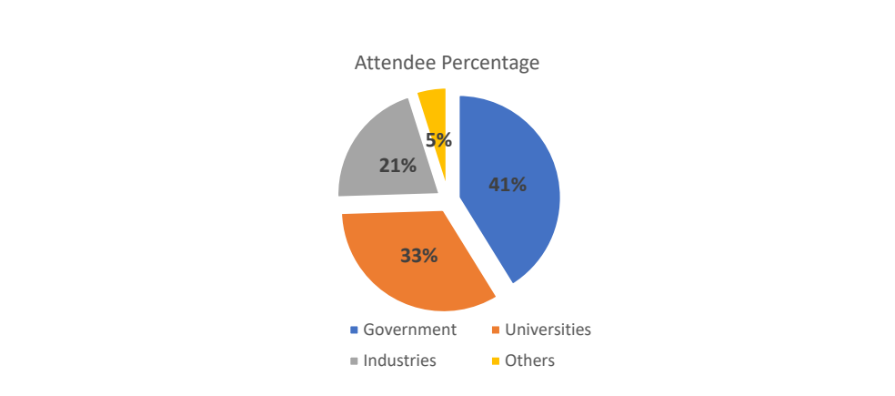

NIST IR 8476 日本語訳
英語タイトル : 3rd High-Performance Computing Security Workshop: Joint NIST-NSF Workshop Report日本語タイトル : 第 3 回（3rd）ハイパフォーマンスコンピューティングセキュリティワークショップ：NIST-NSF 合同ワークショップ報告書
公開日 : 2023-09-26
原文URL : https://csrc.nist.gov/pubs/ir/8476/final
翻訳編集 : 自動生成（有志による非公式の日本語訳）, 原文取得日 : 2026-10-31, 訳文 : 260 / 261 ブロック
[要約] NIST IR 8476 は、ハイパフォーマンスコンピューティング（HPC）セキュリティに関する第 3 回の NIST-NSF 合同ワークショップの報告書です。このワークショップは、HPC セキュリティにおけるコミュニティのニーズ、進行中の活動、今後の方向性を議論するため、政府、学術界、産業界の関係者を集めました。HPC システムは、独自のハードウェア、ソフトウェア、利用者環境を持つことが多く、固有のサイバーセキュリティ上の課題を生じさせるとされています。本報告書は、技術セッションの詳細な要約、分科会セッションの主要な要点、および基調講演の要約を提供します。
NIST Interagency Report
NIST 省庁間報告書
NIST IR 8476
NIST IR 8476
3rd High-Performance Computing Security Workshop
第 3 回（3rd）ハイパフォーマンスコンピューティングセキュリティワークショップ
Joint NIST-NSF Workshop Report
NIST-NSF 合同ワークショップ報告書
Yang Guo Jeremy Licata Victoria Pillitteri Sanjay Rekhi Robert Beverly Xin Yuan Gary Key Rickey Gregg Stephen Bowman Catherine Hinton Albert Reuther Ryan Adamson Aron Warren Purushotham Bangalore Erik Deumens Csilla Farkas
Yang Guo Jeremy Licata Victoria Pillitteri Sanjay Rekhi Robert Beverly Xin Yuan Gary Key Rickey Gregg Stephen Bowman Catherine Hinton Albert Reuther Ryan Adamson Aron Warren Purushotham Bangalore Erik Deumens Csilla Farkas
This publication is available free of charge from: https://doi.org/10.6028/NIST.IR.8476
本刊行物は次の URL から無料で入手できます: https://doi.org/10.6028/NIST.IR.8476
NIST Interagency Report
NIST 省庁間報告書
NIST IR 8476
NIST IR 8476
3rd High-Performance Computing Security Workshop
第 3 回ハイパフォーマンスコンピューティングセキュリティワークショップ
Joint NIST-NSF Workshop Report
NIST-NSF 合同ワークショップ報告書
Yang Guo Jeremy Licata Victoria Pillitteri Sanjay Rekhi Computer Security Division Information Technology Laboratory
Yang Guo Jeremy Licata Victoria Pillitteri Sanjay Rekhi コンピュータセキュリティ部門 情報技術研究所
Robert Beverly National Science Foundation
Robert Beverly 米国立科学財団（National Science Foundation）
Xin Yuan Florida State University
Xin Yuan Florida State University
Gary Key Rickey Gregg Stephen Bowman HPCMP & NIWC Atlantic
Gary Key Rickey Gregg Stephen Bowman HPCMP & NIWC Atlantic
Catherine Hinton Los Alamos National Laboratory
Catherine Hinton Los Alamos National Laboratory
Albert Reuther MIT Lincoln Laboratory
Albert Reuther MIT Lincoln Laboratory
Ryan Adamson Oak Ridge National Laboratory
Ryan Adamson Oak Ridge National Laboratory
Aron Warren Sandia National Laboratories
Aron Warren Sandia National Laboratories
Purushotham Bangalore University of Alabama
Purushotham Bangalore University of Alabama
Erik Deumens University of Florida
Erik Deumens University of Florida
Csilla Farkas University of South Carolina
Csilla Farkas University of South Carolina
This publication is available free of charge from: https://doi.org/10.6028/NIST.IR.8476
本刊行物は次の URL から無料で入手できます: https://doi.org/10.6028/NIST.IR.8476
September 2023
2023 年 9 月
［米国商務省の紋章。公的な標章のため、この非公式サイトには掲載していません。原本 PDF を参照してください。］
U.S. Department of Commerce Gina M. Raimondo, Secretary
米国商務省 Gina M. Raimondo 長官
National Institute of Standards and Technology
国立標準技術研究所（National Institute of Standards and Technology）
Laurie E. Locascio, NIST Director and Under Secretary of Commerce for Standards and Technology
Laurie E. Locascio、NIST 所長兼商務次官（標準・技術担当）
Certain commercial equipment, instruments, software, or materials, commercial or non-commercial, are identified in this paper in order to specify the experimental procedure adequately. Such identification does not imply recommendation or endorsement of any product or service by NIST, nor does it imply that the materials or equipment identified are necessarily the best available for the purpose.
本書では、実験の手順を適切に特定するために、商用・非商用を問わず、特定の機器、装置、ソフトウェア、または資材を明示しています。そのような明示は、NIST による製品やサービスの推奨や承認を意味するものではなく、また、明示された資材や機器が目的に照らして必ずしも入手可能な最良のものであることを意味するものでもありません。
There may be references in this publication to other publications currently under development by NIST in accordance with its assigned statutory responsibilities. The information in this publication, including concepts and methodologies, may be used by federal agencies even before the completion of such companion publications. Thus, until each publication is completed, current requirements, guidelines, and procedures, where they exist, remain operative. For planning and transition purposes, federal agencies may wish to closely follow the development of these new publications by NIST.
本刊行物には、NIST が法令で定められた責務に従って現在策定中の他の刊行物への言及が含まれる場合があります。概念や方法論を含む本刊行物の情報は、そうした関連刊行物の完成前であっても、連邦政府機関が使用してもよいです。したがって、各刊行物が完成するまでは、現行の要件、ガイドライン、および手順が存在する場合には、それらが引き続き有効です。計画および移行のため、連邦機関は、NIST によるこれらの新しい刊行物の策定状況を注意深く追うことを検討してもよいです。
Organizations are encouraged to review all draft publications during public comment periods and provide feedback to NIST. Many NIST cybersecurity publications, other than the ones noted above, are available at https://csrc.nist.gov/publications.
組織には、すべてのドラフト版刊行物をパブリックコメント期間中に確認し、NIST にフィードバックを提供することが推奨されます。上記以外の NIST のサイバーセキュリティ関連刊行物の多くは、https://csrc.nist.gov/publications で入手できます。
NIST Technical Series Policies
NIST Technical Series の方針
Copyright, Use, and Licensing Statements
著作権、使用、およびライセンスに関する声明
NIST Technical Series Publication Identifier Syntax
NIST Technical Series 刊行物の識別子の構文
Publication History
刊行履歴
Approved by the NIST Editorial Review Board on 2023-09-20
2023-09-20 に NIST 編集審査委員会（NIST Editorial Review Board）が承認
How to Cite this NIST Technical Series Publication:
本 NIST Technical Series 刊行物の引用方法:
Guo Y, Licata J, Pillitteri V, Rekhi S, Beverly R, Yuan X, Bowman S, Gregg R, Key G, Hinton C, Reuther A, Adamson R, Warren A, Bangalore P, Deumens E, Farkas C (2023) 3rd High-Performance Computing Security Workshop: Joint NIST-NSF Workshop Report. (National Institute of Standards and Technology, Gaithersburg, MD), NIST Interagency or Internal Report (IR) NIST IR 8476. https://doi.org/10.6028/NIST.IR.8476
Guo Y, Licata J, Pillitteri V, Rekhi S, Beverly R, Yuan X, Bowman S, Gregg R, Key G, Hinton C, Reuther A, Adamson R, Warren A, Bangalore P, Deumens E, Farkas C (2023) 3rd High-Performance Computing Security Workshop: Joint NIST-NSF Workshop Report. (National Institute of Standards and Technology, Gaithersburg, MD), NIST Interagency or Internal Report (IR) NIST IR 8476. https://doi.org/10.6028/NIST.IR.8476
Author ORCID iDs
著者の ORCID iD
Yang Guo: 0000-0002-3245-3069 Jeremy Licata: 0000-0001-8793-5471 Victoria Pillitteri: 0000-0002-7446-7506 Sanjay Rekhi: 0009-0008-8711-4030
Yang Guo: 0000-0002-3245-3069 Jeremy Licata: 0000-0001-8793-5471 Victoria Pillitteri: 0000-0002-7446-7506 Sanjay Rekhi: 0009-0008-8711-4030
Contact Information
連絡先
ir8476-comments@nist.gov
ir8476-comments@nist.gov
National Institute of Standards and Technology Attn: Computer Security Division, Information Technology Laboratory 100 Bureau Drive (Mail Stop 8930) Gaithersburg, MD 20899-8930
国立標準技術研究所 担当: Computer Security Division, Information Technology Laboratory 100 Bureau Drive (Mail Stop 8930) Gaithersburg, MD 20899-8930
All comments are subject to release under the Freedom of Information Act (FOIA).
すべてのコメントは、情報自由法（FOIA）に基づく公開の対象となります。
Abstract
要旨
High-performance computing (HPC) is a vital computational infrastructure for processing large data volumes, performing complex simulations, and conducting advanced machine learning model training. As such, HPC is a critical component of scientific discovery, innovation, and economic competitiveness. Cybersecurity thus plays an important role in HPC by safeguarding against abuse and misuse and ensuring data and research integrity. However, HPC systems often have unique hardware, software, and user environments that pose distinct cybersecurity challenges. This collaborative workshop gathered stakeholders from government, academia, and industry to discuss community needs, ongoing activities, and future directions in HPC security. This public workshop report provides detailed summaries of technical sessions, key takeaways from breakout sessions, and a summary of the keynote presentations.
ハイパフォーマンスコンピューティング（HPC）は、大量のデータの処理、複雑なシミュレーションの実行、高度な機械学習モデルの訓練を行うための、不可欠な計算インフラストラクチャです。したがって HPC は、科学的発見、イノベーション、経済的競争力の重要な構成要素です。このためサイバーセキュリティは、悪用や誤用から保護し、データと研究の完全性を確保することで、HPC において重要な役割を果たします。しかし、HPC システムは、独自のハードウェア、ソフトウェア、利用者環境を持つことが多く、固有のサイバーセキュリティ上の課題を生じさせます。この共同ワークショップは、HPC セキュリティにおけるコミュニティのニーズ、進行中の活動、今後の方向性を議論するため、政府、学術界、産業界の関係者を集めました。この公開のワークショップ報告書は、技術セッションの詳細な要約、分科会セッションの主要な要点、および基調講演の要約を提供します。
Keywords
キーワード
high-performance computing (HPC); HPC security; HPC security posture; security guidance; security compliance.
ハイパフォーマンスコンピューティング（HPC）; HPC セキュリティ; HPC セキュリティ態勢; セキュリティガイダンス; セキュリティコンプライアンス。
Reports on Computer Systems Technology
コンピュータシステム技術に関する報告書
The Information Technology Laboratory (ITL) at the National Institute of Standards and Technology (NIST) promotes the U.S. economy and public welfare by providing technical leadership for the Nation’s measurement and standards infrastructure. ITL develops tests, test methods, reference data, proof of concept implementations, and technical analyses to advance the development and productive use of information technology. ITL’s responsibilities include the development of management, administrative, technical, and physical standards and guidelines for the cost-effective security and privacy of other than national security-related information in federal information systems.
国立標準技術研究所（NIST）の情報技術研究所（ITL）は、国の計測・標準インフラストラクチャに関する技術的リーダーシップを提供することにより、米国経済と公共の福祉の向上に貢献しています。ITL は、情報技術の開発と有効な活用を推進するため、試験、試験方法、参照データ、概念実証の実装、および技術分析を開発しています。ITL の責務には、連邦情報システムにおける国家安全保障に関わらない情報のセキュリティとプライバシーについて、費用対効果の高い管理的・事務的・技術的・物理的な標準およびガイドラインを策定することが含まれます。
Table of Contents
目次
List of Tables
表の一覧
List of Figures
図の一覧
Preface
まえがき
This report is intended to capture the activities and pertinent topics from the 3rd High-Performance Computing Security Workshop for public record and dissemination. The content of this report has been assimilated from individual workshop session scribe notes and edited for clarity and uniformity. As such, no claims are made as to the completeness or accuracy of the content herein. Rather, this report should be viewed as a summary of discussion-worthy points from the workshop. Further, this report does not reflect official National Institute of Standards and Technology (NIST), National Science Foundation (NSF), or federal positions or policies. All listed talks and participants provided consent for their names and session content to appear in this document.
本報告書は、第 3 回（3rd）ハイパフォーマンスコンピューティングセキュリティワークショップの活動と関連する話題を、公的記録および周知のために記録することを意図しています。本報告書の内容は、ワークショップの各セッションの記録係のメモから集約し、明確さと統一性のために編集したものです。したがって、ここに含まれる内容の完全性や正確性について、いかなる主張も行いません。むしろ本報告書は、ワークショップで議論に値する論点の要約とみなすべきです。さらに、本報告書は、国立標準技術研究所（NIST）、全米科学財団（NSF）、または連邦政府の公式な見解や方針を反映するものではありません。記載されたすべての講演と参加者は、自身の氏名とセッションの内容が本書に掲載されることに同意しています。
1. Introduction: Workshop Objective, Participants, and Agenda
1. はじめに: ワークショップの目的、参加者、およびアジェンダ
High-performance computing (HPC) serves as a fundamental computing infrastructure that drives scientific discovery, innovation, and economic competitiveness. The ability to process large volumes of data, carry out complex simulations, and conduct sophisticated machine learning (ML) model training at high speeds is essential for upholding the Nation’s global competitiveness. Cybersecurity plays an important role in HPC by protecting against misuse, ensuring availability, and providing data integrity. Furthermore, the intellectual property embedded in algorithms, models, and HPC infrastructure design and architecture, as well as valuable and sensitive data necessitate comprehensive security measures.
ハイパフォーマンスコンピューティング（HPC）は、科学的発見、イノベーション、経済的競争力を推進する基盤的な計算インフラストラクチャです。大量のデータを処理し、複雑なシミュレーションを実行し、高度な機械学習（ML）モデルの訓練を高速に行う能力は、国の世界的な競争力を維持するために不可欠です。サイバーセキュリティは、誤用から保護し、可用性を確保し、データの完全性を保つことで、HPC において重要な役割を果たします。さらに、アルゴリズム、モデル、HPC インフラストラクチャの設計とアーキテクチャに組み込まれた知的財産、ならびに価値ある機微なデータには、包括的なセキュリティ対策が必要です。
HPC systems differ in the applications they run, the missions they support, and their system architectures and designs. The unique hardware, software, research, and users in the HPC ecosystem pose cybersecurity challenges that are frequently distinct from non-HPC environments. Each HPC system may possess unique security requirements and follow specific security guidance that tailored security solutions. For instance, HPC systems that belong to the U.S. Government must comply with the NIST Risk Management Framework (RMF), and authorizations and audits are required for system operation. In contrast, HPC systems that are supported by the National Science Foundation (NSF) rely on managing operators to secure the systems in a manner that is aligned with the science and discovery mission of the infrastructure. While different strategies are employed across the broader HPC ecosystem, security remains a crucial component to achieving the anticipated benefits of HPC.
HPC システムは、実行するアプリケーション、支援するミッション、そのシステムアーキテクチャと設計の点で異なります。HPC エコシステムに固有のハードウェア、ソフトウェア、研究、利用者は、HPC 以外の環境とはしばしば異なるサイバーセキュリティ上の課題を生じさせます。各 HPC システムは、独自のセキュリティ要件を持ち、特定のセキュリティガイダンスに従うことがあり、それがセキュリティソリューションを個別に調整する要因となります。たとえば、米国政府に属する HPC システムは、NIST リスク管理フレームワーク（RMF）に準拠しなければならず、システムの運用には認可と監査が必要です。これに対し、全米科学財団（NSF）が支援する HPC システムは、インフラストラクチャの科学・発見というミッションに沿った方法でシステムを保護することを、管理する運用者に委ねています。HPC エコシステム全体にわたってさまざまな戦略が採られていますが、セキュリティは、HPC に期待される便益を達成するための重要な構成要素であり続けます。
The NIST HPC Security Working Group (WG) has been leading efforts to develop comprehensive and reliable security guidance for HPC systems. In pursuit of its mission and to engage the greater HPC scientific community, NIST collaborated with the NSF to host the 3rd High-Performance Computing Security Workshop on March 15 – 16, 2023, at the National Cybersecurity Center of Excellence (NCCoE) in Rockville, Maryland. The workshop gathered the community’s needs and feedback, facilitated intellectual discourse, reported and reflected on ongoing activities in the HPC Security WG, and defined and discussed future directions with stakeholders from industry, academia, and government.
NIST HPC セキュリティワーキンググループ（WG）は、HPC システム向けの包括的で信頼できるセキュリティガイダンスを策定する取り組みを主導してきました。そのミッションを追求し、より広い HPC 科学コミュニティを巻き込むため、NIST は NSF と協力して、2023 年 3 月 15〜16 日に、メリーランド州 Rockville の国立サイバーセキュリティ卓越センター（NCCoE）で、第 3 回ハイパフォーマンスコンピューティングセキュリティワークショップを開催しました。このワークショップでは、コミュニティのニーズとフィードバックを集め、知的な議論を促進し、HPC セキュリティ WG の進行中の活動を報告して振り返り、産業界、学術界、政府の関係者とともに今後の方向性を定義して議論しました。

「Attendee Percentage」（参加者の割合）と題した円グラフです。Government（政府）41%（青）、Universities（大学）33%（橙）、Industries（産業界）21%（灰色）、Others（その他）5%（黄）です。
Fig. 1. Workshop attendee composition
図 1. ワークショップ参加者の構成
The in-person two-day workshop attracted 102 attendees, with 41% representing government agencies, 33% from academia, 21% from industry, and 5% from other sectors (refer to Fig. 1). Among the attendees, over 50% held key roles in HPC security by serving as Chief Information Security Officers (CISOs), security engineers, security controls assessors (SCAs), HPC architects, and system engineers. The workshop encompassed three keynote talks, five technical sessions, multiple interactive panel discussions, and four breakout sessions with specific discussion focuses. Distinguished speakers were drawn from government agencies, national laboratories, NSF-funded open science supercomputing centers, universities, and industries. The workshop agenda and speakers’ details can be found in Table 1 and Table 2.
対面での 2 日間のワークショップには 102 名の参加者が集まり、41% が政府機関、33% が学術界、21% が産業界、5% がその他の部門を代表していました（図 1 を参照）。参加者のうち 50% 超が、最高情報セキュリティ責任者（CISO）、セキュリティエンジニア、セキュリティ管理策評価者（SCA）、HPC アーキテクト、システムエンジニアとして、HPC セキュリティにおける重要な役割を担っていました。ワークショップには、3 件の基調講演、5 つの技術セッション、複数の対話型パネルディスカッション、および議論の焦点を定めた 4 つの分科会セッションが含まれていました。著名な講演者は、政府機関、国立研究所、NSF が資金提供するオープンサイエンスのスーパーコンピューティングセンター、大学、産業界から集められました。ワークショップのアジェンダと講演者の詳細は、表 1 と表 2 に記載されています。
The rest of the workshop report is organized as follows:
ワークショップ報告書の残りの構成は次のとおりです。
•Section 2 covers highlights and summaries of individual sessions.
•第 2 章では、個々のセッションの要点と要約を扱います。
•Section 3 reports on the key takeaways of breakout sessions.
•第 3 章では、分科会セッションの主要な要点を報告します。
•Section 4 includes a summary of the keynotes.
•第 4 章には、基調講演の要約が含まれます。
Table 1. 3rd High-Performance Computing Security Workshop Agenda — Day 1
表 1. 第 3 回ハイパフォーマンスコンピューティングセキュリティワークショップのアジェンダ — 1 日目
| Start Time (ET) | End (ET) | Session/Talk |
|---|---|---|
| 8:30 a.m. | 9:00 a.m. | Welcome
|
| 9:00 a.m. | 9:45 a.m. | Keynote 1: The NSF HPC Security Landscape: Research Challenges to Production Capabilities
|
| 9:45 a.m. | 10:00 a.m. | Break |
| 10:00 a.m. | 11:45 a.m. | HPC Architecture and Security Posture
|
| 11:45 a.m. | 1:00 p.m. | Lunch |
| 1:00 p.m. | 2:15 p.m. | HPC Operator Security Experience
|
| 2:15 p.m. | 2:30 p.m. | Break |
| 2:30 p.m. | 3:45 p.m. | RMF Development, Implementation, and Assessment
|
| 3:45 p.m. | 5:00 p.m. | Breakout Sessions
|
| 開始時刻（ET） | 終了時刻（ET） | セッション／講演 |
|---|---|---|
| 午前 8:30 | 午前 9:00 | 開会あいさつ
|
| 午前 9:00 | 午前 9:45 | 基調講演 1: NSF の HPC セキュリティの状況: 研究課題から実運用の能力へ
|
| 午前 9:45 | 午前 10:00 | 休憩 |
| 午前 10:00 | 午前 11:45 | HPC のアーキテクチャとセキュリティ態勢
|
| 午前 11:45 | 午後 1:00 | 昼食 |
| 午後 1:00 | 午後 2:15 | HPC 運用者のセキュリティ経験
|
| 午後 2:15 | 午後 2:30 | 休憩 |
| 午後 2:30 | 午後 3:45 | RMF の開発、実装、および評価
|
| 午後 3:45 | 午後 5:00 | 分科会セッション
|
Table 2. 3rd High-Performance Computing Security Workshop Agenda — Day 2
表 2. 第 3 回ハイパフォーマンスコンピューティングセキュリティワークショップのアジェンダ — 2 日目
| Start Time (ET) | End (ET) | Session/Talk |
|---|---|---|
| 8:45 a.m. | 9:30 a.m. | Keynote 2: Office of Science HPC Cybersecurity
|
| 9:30 a.m. | 10:20 a.m. | HPC Security Research
|
| 10:20 a.m. | 10:40 a.m. | Break |
| 10:40 a.m. | 11:30 a.m. |
|
| 11:30 a.m. | 12:15 p.m. | Keynote 3: Usable Computer Security and Privacy to Enable Data Sharing in High-Performance Computing Environments
|
| 12:15 p.m. | 1:15 p.m. | Lunch |
| 1:15 p.m. | 2:45 p.m. | HPC Vendors
|
| 2:45 p.m. | 2:55 p.m. | Break |
| 2:55 p.m. | 3:35 p.m. | Breakout Readout |
| 3:35 p.m. | 3:50 p.m. | HPC Security Working Group Readout
|
| 3:50 p.m. | 4:00 p.m. | Wrap Up |
| 開始時刻（ET） | 終了時刻（ET） | セッション／講演 |
|---|---|---|
| 午前 8:45 | 午前 9:30 | 基調講演 2: 科学局の HPC サイバーセキュリティ
|
| 午前 9:30 | 午前 10:20 | HPC セキュリティの研究
|
| 午前 10:20 | 午前 10:40 | 休憩 |
| 午前 10:40 | 午前 11:30 |
|
| 午前 11:30 | 午後 12:15 | 基調講演 3: ハイパフォーマンスコンピューティング環境でのデータ共有を可能にする、使いやすいコンピュータセキュリティとプライバシー
|
| 午後 12:15 | 午後 1:15 | 昼食 |
| 午後 1:15 | 午後 2:45 | HPC ベンダー
|
| 午後 2:45 | 午後 2:55 | 休憩 |
| 午後 2:55 | 午後 3:35 | 分科会セッションの報告 |
| 午後 3:35 | 午後 3:50 | HPC セキュリティワーキンググループの報告
|
| 午後 3:50 | 午後 4:00 | 閉会 |
2. Workshop Session Highlights and Summaries
2. ワークショップセッションの要点と要約
2.1. HPC Architecture and Security Posture
2.1. HPC のアーキテクチャとセキュリティ態勢
High-performance computing presents distinct security challenges, as it requires striking a balance between achieving enhanced performance and maintaining system security. This session primarily focused on the interplay between performance and security. Presenters from government agencies and national laboratories shared their work on securing HPC systems and offered valuable insights into the ongoing challenges faced by their respective organizations. It is noteworthy that these challenges encompass numerous environments and security requirements.
ハイパフォーマンスコンピューティングは、性能の向上とシステムのセキュリティの維持との均衡をとる必要があるため、独特のセキュリティ上の課題を提起します。このセッションは主に、性能とセキュリティの相互作用に焦点を当てました。政府機関と国立研究所の発表者が、HPC システムの保護に関する取り組みを共有し、それぞれの組織が直面している継続的な課題について貴重な洞察を提供しました。これらの課題が、数多くの環境とセキュリティ要件にまたがっていることは注目に値します。
Andrew Prout from Massachusetts Institute of Technology (MIT) Lincoln Lab discussed their use of virtual private HPC as a software development sandbox. HPC systems are utilized for a wide range of self-developed software that serves specific research purposes. Unfortunately, security considerations are often overlooked in the development of such software. Andrew discussed potential techniques that can effectively manage and address the security implications associated with these workflows. One of the techniques highlighted was the implementation of virtual private HPC, which creates a clear separation among users. This separation includes limiting users’ visibility into the activities of others, such as processes, filesystem access, network traffic, and accelerator usage. With this setup, individual users experience a sense of running on their own dedicated HPC system, thus enhancing both security and privacy.
Massachusetts Institute of Technology（MIT）Lincoln Lab の Andrew Prout は、ソフトウェア開発サンドボックスとしての仮想プライベート HPC の利用について論じました。HPC システムは、特定の研究目的に資する、さまざまな自作ソフトウェアに利用されています。残念ながら、そうしたソフトウェアの開発では、セキュリティへの配慮がしばしば見落とされています。Andrew は、これらのワークフローに伴うセキュリティ上の影響を効果的に管理し対処できる可能性のある手法について論じました。強調された手法の 1 つが仮想プライベート HPC の導入で、これは利用者間を明確に分離します。この分離には、プロセス、ファイルシステムへのアクセス、ネットワークトラフィック、アクセラレータの使用など、他の利用者の活動に対する利用者の可視性の制限が含まれます。この構成では、個々の利用者が自分専用の HPC システム上で実行しているように感じられ、セキュリティとプライバシーの両方が高まります。
In the second presentation, Aron Warren from Sandia National Laboratories introduced the concept of a diskless HPC architecture. This innovative approach aims to minimize operational overhead while offering multiple advantages for enhancing security. By eliminating physical disks at most systems, it reduces the risk of data breaches or unauthorized access to sensitive information. Additionally, the diskless setup streamlines maintenance processes, reduces the attack surface, and enhances overall system resilience.
2 件目の発表では、Sandia National Laboratories の Aron Warren が、ディスクレス HPC アーキテクチャの概念を紹介しました。この革新的なアプローチは、運用上のオーバーヘッドを最小限に抑えつつ、セキュリティを強化するための複数の利点を提供することを目指しています。ほとんどのシステムで物理ディスクをなくすことで、データ侵害や機微な情報への不正アクセスのリスクを減らします。加えて、ディスクレス構成は保守プロセスを効率化し、攻撃対象領域を縮小し、システム全体のレジリエンスを高めます。
According to Ryan Adamson from the Oak Ridge Leadership Computing Facility, the design and architecture of HPC systems severely lack security considerations. These systems prioritize speed and performance, often relegating security to an afterthought. In his presentation, Ryan examined the security-related disparities between industry-standard commodity systems and the common characteristics found in HPC environments. He delved into the interfaces that connect HPC components — particularly those utilized for HPC workflows — to evaluate the strengths and weaknesses of the existing HPC security model. Ryan also provided an example of a zero-day vulnerability that was discovered in a system formerly ranked in the TOP500 list. The demonstration emphasized the need for broader action in implementing robust security measures within the HPC field.
Oak Ridge Leadership Computing Facility の Ryan Adamson によれば、HPC システムの設計とアーキテクチャには、セキュリティへの配慮が著しく欠けています。これらのシステムは速度と性能を優先し、セキュリティを後回しにすることが少なくありません。発表で Ryan は、業界標準のコモディティシステムと、HPC 環境に見られる一般的な特徴との間にある、セキュリティ面の格差を検討しました。彼は、HPC の構成要素を接続するインターフェース、特に HPC のワークフローで利用されるものを掘り下げ、既存の HPC セキュリティモデルの長所と短所を評価しました。Ryan はまた、かつて TOP500 リストに載っていたシステムで発見されたゼロデイ脆弱性の例も示しました。このデモンストレーションは、HPC 分野において堅牢なセキュリティ対策を実装するために、より広範な行動が必要であることを強調しました。
The Department of Defense High Performance Computing Modernization Program (DoD HPCMP) is entrusted with the mission of accelerating technology development and the transition toward superior defense capabilities through the strategic utilization of high-performance computing, networking, and computational expertise. Stephen Bowman, Rickey Gregg, and Gary Key described the mission of the DoD HPCMP and outlined their security strategies for maintaining multi-tiered cybersecurity measures and risk management processes to minimize risk and enhance the resiliency of HPCMP networks and systems.
国防総省ハイパフォーマンスコンピューティング近代化プログラム（DoD HPCMP）は、ハイパフォーマンスコンピューティング、ネットワーキング、計算に関する専門知識を戦略的に活用することで、技術開発と優れた防衛能力への移行を加速するというミッションを託されています。Stephen Bowman、Rickey Gregg、Gary Key は、DoD HPCMP のミッションを説明し、HPCMP のネットワークとシステムのリスクを最小化しレジリエンスを高めるために、多層的なサイバーセキュリティ対策とリスク管理プロセスを維持するためのセキュリティ戦略の概要を示しました。
During the final presentation, Ian Lee from Lawrence Livermore National Laboratory (LLNL) provided an overview of the security operations conducted at Livermore Computing. As the complexity of HPC systems continues to grow to meet user needs, the challenges associated with securing these systems have also escalated. While security compliance frameworks offer some assistance, they are not the sole solution to ensuring comprehensive security. Ian emphasized the critical importance of system monitoring, gaining insights into ongoing activities, and illuminating the computing environment. He also described the implementation of a continuous monitoring system at LLNL, which effectively addresses these requirements. This system enables proactive monitoring and offers valuable visibility into the computing environment to enhance security measures.
最後の発表では、Lawrence Livermore National Laboratory（LLNL）の Ian Lee が、Livermore Computing で実施されているセキュリティ運用の概要を示しました。HPC システムの複雑さが利用者のニーズを満たすために増し続けるにつれ、これらのシステムを保護することに伴う課題も増大しています。セキュリティコンプライアンスのフレームワークはある程度の助けにはなりますが、包括的なセキュリティを確保する唯一の解決策ではありません。Ian は、システムの監視、進行中の活動に関する洞察の獲得、計算環境の可視化が極めて重要であることを強調しました。彼はまた、これらの要件に効果的に対処する、LLNL での継続的モニタリングシステムの実装についても説明しました。このシステムは、事前対応型の監視を可能にし、セキュリティ対策を強化するための計算環境への貴重な可視性を提供します。
2.2. HPC Operator Security Experience
2.2. HPC 運用者のセキュリティ経験
HPC system administrators play a critical yet often under-appreciated role in maintaining the availability, performance, and security of HPC systems and ensuring that they serve their mission as a powerful computational instrument that enables scientists and science. These HPC operators often work behind the scenes to meet the daily operational needs and challenges of running the infrastructure, supporting users and software applications, and responding to security events.
HPC システム管理者は、HPC システムの可用性、性能、セキュリティを維持し、それらが科学者と科学を支える強力な計算機器としてのミッションを果たすことを確保するうえで、重要でありながら、しばしば十分に評価されていない役割を果たしています。これらの HPC 運用者は、インフラストラクチャの運用、利用者とソフトウェアアプリケーションの支援、セキュリティイベントへの対応という、日々の運用上のニーズと課題に応えるため、しばしば舞台裏で働いています。
As system administrators bridge the gap between the theory and practice of securing HPC systems, the workshop organizers were delighted to convene a panel of five operators of NSF-supported HPC with representation from National Center for Atmospheric Research (NCAR), National Center for Supercomputing Applications (NCSA), Pittsburgh Supercomputing Center (PSC), San Diego Supercomputer Center (SDSC), and Texas Advanced Computing Center (TACC). The goal of the panel was to facilitate an open exchange between practitioners, security researchers, and policy and standards makers in order to identify best practices, common challenges, and anticipated future threats.
システム管理者が HPC システムを保護する理論と実践の隔たりを埋める役割を担うことを踏まえ、ワークショップの主催者は、National Center for Atmospheric Research（NCAR）、National Center for Supercomputing Applications（NCSA）、Pittsburgh Supercomputing Center（PSC）、San Diego Supercomputer Center（SDSC）、Texas Advanced Computing Center（TACC）を代表する、NSF が支援する HPC の運用者 5 名によるパネルを開催できたことを喜びました。パネルの目的は、ベストプラクティス、共通の課題、予想される将来の脅威を明らかにするため、実務者、セキュリティ研究者、方針や標準の策定者の間で率直な意見交換を促すことでした。
These HPC systems serve a primarily academic user base who engage in open science. NSF does not mandate a specific cybersecurity compliance regime for the HPC systems that it helps to support but recognizes that each facility may be a unique environment with unique requirements that demand an approach tailored to its unique mission. The science and workloads of each HPC system can vary greatly. For example, NCAR focuses on climatology models and atmospheric research, so the panel’s responses reflected the diversity of their HPC missions, users, and approaches to cybersecurity.
これらの HPC システムは、オープンサイエンスに取り組む学術界の利用者を主な利用者基盤としています。NSF は、その支援する HPC システムに対して特定のサイバーセキュリティコンプライアンス体制を義務づけていませんが、各施設が、独自のミッションに合わせたアプローチを必要とする、独自の要件を持つ独自の環境である可能性があることを認識しています。各 HPC システムの科学とワークロードは大きく異なりえます。たとえば NCAR は気候学モデルと大気研究に焦点を当てているため、パネルの回答は、HPC のミッション、利用者、サイバーセキュリティへのアプローチの多様性を反映したものでした。
The panelists articulated some of the unique aspects of their HPC systems that inform their approach to security. Some of these differences included the use of dedicated login (bastion) nodes, the fact that users often do not belong to the same organization that owns or runs the HPC, the highly dynamic nature of the workloads, and the fact that users can bring and compile their own code. One panelist described how even the well-accepted practice of using multi-factor authentication is challenging to accomplish with off-premises users who do not belong to the organization.
パネリストは、セキュリティへのアプローチの根拠となる、それぞれの HPC システムの独自の側面をいくつか明確に述べました。これらの違いには、専用のログイン（要塞）ノードの使用、利用者が HPC を所有または運用する組織に属していないことが多いこと、ワークロードの非常に動的な性質、利用者が自らのコードを持ち込んでコンパイルできることが含まれていました。あるパネリストは、多要素認証の使用という広く受け入れられている実践でさえ、組織に属さない組織外の利用者を相手にする場合には達成が困難であることを説明しました。
Another panelist described how the traditional use of login or stepping-stone nodes has evolved, with users now demanding new tools and interfaces instead of the traditional Secure Shell Protocol (SSH). This trend toward new and more featureful access methodologies with more software dependencies and a larger attack surface has presented the operators with new challenges in ensuring that users can operate securely.
別のパネリストは、ログインノードや踏み台（stepping-stone）ノードの従来の使われ方が、利用者が従来の Secure Shell Protocol（SSH）に代わる新しいツールやインターフェースを求めるようになり、どのように進化してきたかを説明しました。ソフトウェアの依存関係が多く、攻撃対象領域がより大きい、新しくより多機能なアクセス方式へのこの傾向は、運用者に、利用者が安全に作業できることを確保するうえでの新たな課題を突きつけています。
Indeed, users themselves can present threats to HPC systems. In an HPC environment, it is not unusual for users to bring their own code and compile their own binaries. The panel agreed that this open software policy is necessary to support the unique needs of their diverse population of science users but also agreed that user-installed software presents challenges to understanding the threat surface and how to identify and patch vulnerable code. The panel unanimously agreed that they strove to support users and their unique application needs but stressed that they have to be aware of these needs and that users should engage earlier and more deeply with the operators. The panel also discussed how the inherently multi-node, distributed nature of typical HPC systems presents an advantage in performing rolling reboots, wherein machines are patched when their jobs are finished. As the job scheduler will simply choose an available node, the patch and reboot are transparent to the end users.
実際、利用者自身が HPC システムに脅威をもたらしうることがあります。HPC 環境では、利用者が自らのコードを持ち込み、自らのバイナリをコンパイルすることは珍しくありません。パネルは、このオープンなソフトウェアポリシーが、多様な科学利用者層の独自のニーズを支えるために必要であることで一致しましたが、利用者がインストールしたソフトウェアが、脅威対象領域や、脆弱なコードの特定とパッチ適用の方法を把握する際の課題になることでも一致しました。パネルは全会一致で、利用者とその独自のアプリケーションのニーズを支援するよう努めていると述べつつ、運用者がこれらのニーズを認識している必要があり、利用者はより早い段階から運用者とより深く関わるべきであると強調しました。パネルはまた、典型的な HPC システムが本質的にマルチノードの分散型であることが、ジョブが終了したマシンから順にパッチを適用する、ローリング再起動を行う際の利点になることも議論しました。ジョブスケジューラーは単に利用可能なノードを選ぶため、パッチ適用と再起動はエンドユーザーには透過的になります。
The panel identified software supply chain security as both a current and future challenge, especially in HPC, where code provenance is largely unknown and users compile their own code. Asked how they might redesign HPC systems to be more secure, one panelist emphasized the power of virtualization, containers, and the ability to limit the attack surface. The panel discussed the relative merits, performance, and obstacles to such a pure container-based approach.
パネルは、ソフトウェアサプライチェーンのセキュリティを、現在と将来の両方の課題として挙げました。特に HPC では、コードの来歴がほとんど不明で、利用者が自らのコードをコンパイルするためです。HPC システムをより安全にするためにどのように再設計するかを問われると、あるパネリストは、仮想化、コンテナ、そして攻撃対象領域を制限できる能力の力を強調しました。パネルは、このような純粋にコンテナベースのアプローチの相対的な長所、性能、および障害について議論しました。
In contrast, one panelist discussed how they have embraced end users as a second set of eyes or a “human intrusion detection system.” The panelist noted that since the users are most intimately familiar with their workload and how it performs on the HPC system, they are often able to identify problems that could be indicative of a system failure or a larger security event that warrants investigation. This was another example of how deeply engaging with HPC users yielded benefits for this particular operator, wherein their users alerted them to potential anomalies before the operators themselves were aware of the problem.
対照的に、あるパネリストは、エンドユーザーを第二の目、あるいは「人間の侵入検知システム」として受け入れてきたことについて論じました。このパネリストは、利用者が自らのワークロードと、それが HPC システム上でどのように動作するかを最もよく知っているため、システム障害や、調査に値するより大きなセキュリティイベントの兆候となりうる問題を、しばしば特定できることを指摘しました。これは、この運用者にとって、HPC 利用者と深く関わることが利益をもたらした別の例であり、運用者自身が問題に気づく前に、利用者が潜在的な異常を知らせてくれたのです。
In the end, the panel enthusiastically identified with the HPC mission and emphasized that the “supercomputer is a research instrument.” They further highlighted the market-like forces that incentivize them to provide particular capabilities, both in terms of functionality and security. If users are unable to effectively use one HPC system, they may choose to use a different one. Thus, the operators concluded that making HPC performant, featureful, and secure ultimately supports users, impacts science and discovery, and ensures a continued stream of funding.
最終的に、パネルは熱意をもって HPC のミッションに共感し、「スーパーコンピュータは研究機器である」と強調しました。パネルはさらに、機能とセキュリティの両面で、特定の能力を提供するインセンティブとなる市場のような力を強調しました。利用者が 1 つの HPC システムを効果的に使えなければ、別のシステムを使うことを選ぶ可能性があります。したがって運用者は、HPC を高性能で、機能が豊富で、安全にすることが、最終的に利用者を支え、科学と発見に影響を与え、継続的な資金の流れを確保すると結論づけました。
Finally, when queried about their hypothetical primary concern in the context of a cybersecurity incident (“what keeps you up at night”), the panel agreed that the most worrisome potential consequence is that the science itself is somehow called into question. The panelists emphasized how this fear has driven their continued work to secure their respective HPC and to continue to balance the security and usability of the system amid a continually evolving threat and policy landscape.
最後に、サイバーセキュリティインシデントを想定したときの主な懸念（「夜も眠れなくなる理由」）を尋ねられると、パネルは、最も懸念される潜在的な結果は、科学そのものが何らかの形で疑問視されることだと一致しました。パネリストは、この恐れが、絶えず進化する脅威と政策の状況の中で、それぞれの HPC を保護し、システムのセキュリティと使いやすさの均衡をとり続けるという彼らの継続的な取り組みを、どのように突き動かしてきたかを強調しました。
2.3. Risk Management Framework Development, Implementation, and Assessment
2.3. リスク管理フレームワークの開発、実装、および評価
The Risk Management Framework (RMF) Development, Implementation, and Assessment Panel featured panelists from federal agencies, national laboratories, and academia, all of whom extensively utilize HPC to support operational research missions. The goal of the panel was to discuss how the NIST RMF supports their HPC cybersecurity programs and share valuable insights, best practices, future challenges and opportunities, and lessons learned. Two panelists presented their work on developing a security framework for scientific HPC facilities and supporting the implementation of RMF, and a moderated discussion to exchange ideas followed.
リスク管理フレームワーク（RMF）の開発、実装、および評価パネルには、連邦政府機関、国立研究所、学術界からのパネリストが参加し、いずれも運用上の研究ミッションを支えるために HPC を広範に利用しています。パネルの目的は、NIST RMF が各自の HPC サイバーセキュリティプログラムをどのように支えているかを議論し、貴重な洞察、ベストプラクティス、将来の課題と機会、および教訓を共有することでした。2 名のパネリストが、科学向け HPC 施設のためのセキュリティフレームワークの開発と、RMF の実装の支援に関する取り組みを発表し、続いて、意見を交換するための司会付きの議論が行われました。
2.3.1. Presentation on the Trusted CI Framework
2.3.1. Trusted CI Framework に関する発表
Dr. Jim Basney from the National Center for Supercomputing Applications (NCSA) at University of Illinois Urbana-Champaign (UIUC) presented an overview of the Trusted Cyberinfrastructure (CI) Program. The program aims to establish a comprehensive framework to address cybersecurity and privacy needs within the scientific community. HPC facilities supported by the NSF are crucial for NSF research projects. NSF HPC facilities are largely responsible for their own cybersecurity and are not required to follow existing federally legislated security and privacy requirements.
University of Illinois Urbana-Champaign（UIUC）の National Center for Supercomputing Applications（NCSA）の Jim Basney 博士は、Trusted Cyberinfrastructure（CI）プログラムの概要を発表しました。このプログラムは、科学コミュニティ内のサイバーセキュリティとプライバシーのニーズに対処する包括的なフレームワークを確立することを目指しています。NSF が支援する HPC 施設は、NSF の研究プロジェクトにとって不可欠です。NSF の HPC 施設は、自らのサイバーセキュリティについて大部分を自ら責任を負っており、連邦法で定められた既存のセキュリティおよびプライバシーの要件に従うことは求められていません。
The NSF’s security approach avoids prescribing specific security measures, enabling facilities to strike a balance between cybersecurity requirements, unique research objectives, and the constraints of the science mission. Trusted CI has developed the “Trusted CI Framework” as a set of guiding security policy pillars for NSF projects and facilities. The Trusted CI Framework pillars serve as the foundation for customized security and privacy requirements tailored to the unique needs of research facilities and their scientific missions.
NSF のセキュリティへのアプローチは、特定のセキュリティ対策を規定することを避けており、施設がサイバーセキュリティ要件、独自の研究目標、科学ミッションの制約の間で均衡をとれるようにしています。Trusted CI は、NSF のプロジェクトや施設のためのセキュリティポリシーの指針となる柱の集合として、「Trusted CI Framework」を開発しました。Trusted CI Framework の柱は、研究施設とその科学ミッションの独自のニーズに合わせて調整された、カスタマイズされたセキュリティとプライバシーの要件の基盤となります。
Furthermore, the structured Trusted CI Framework can be seamlessly integrated with existing federal security and privacy guidance. Currently, a crosswalk is being developed to showcase the alignment between the Trusted CI Framework and the NIST RMF. Additional information can be found at the Trusted CI Framework website.
さらに、構造化された Trusted CI Framework は、既存の連邦のセキュリティおよびプライバシーのガイダンスにシームレスに統合できます。現在、Trusted CI Framework と NIST RMF の整合を示すための対応表（クロスウォーク）が作成されています。追加の情報は、Trusted CI Framework のウェブサイトで入手できます。
2.3.2. Presentation on the Development of TOSS 4 STIG
2.3.2. TOSS 4 STIG の開発に関する発表
Ian Lee from Lawrence Livermore National Laboratory (LLNL) introduced the development process of a publicly available Security Technical Implementation Guide (STIG) for the Tri-Lab Operating System Stack (TOSS) HPC environments. Starting with the identification of a common operating system for HPC environments, the team focused on building a methodology that addressed the custom requirements needed for hardware architectures, high-speed interconnections, and very large filesystems.
Lawrence Livermore National Laboratory（LLNL）の Ian Lee は、Tri-Lab Operating System Stack（TOSS）の HPC 環境向けの、公開されている Security Technical Implementation Guide（STIG）の開発プロセスを紹介しました。HPC 環境に共通するオペレーティングシステムを特定することから始めて、チームは、ハードウェアアーキテクチャ、高速相互接続、非常に大規模なファイルシステムに必要なカスタム要件に対処する方法論の構築に注力しました。
Recognizing the challenge of tailoring STIGs for each implementation, the project sought to establish a standard that could be leveraged for other HPC environments. Starting with the Red Hat Enterprise Linux 8 STIG, the team adjusted STIG-specific language to enhance its relevance to other government agencies. Close collaboration with the Defense Information Systems Agency (DISA) ensured that requirements are included to meet HPC-specific operational requirements. The rules in the TOSS4 STIG include additional information about the HPC implementation as well as check and fix elements that enable users to implement their own validation methods. The STIG is available on the Cyber Exchange public site. Additional information can be found on the project’s GitHub page.
実装ごとに STIG を調整することの難しさを認識し、このプロジェクトは、他の HPC 環境でも活用できる標準を確立することを目指しました。Red Hat Enterprise Linux 8 STIG から始めて、チームは、他の政府機関との関連性を高めるために、STIG 固有の文言を調整しました。Defense Information Systems Agency（DISA）との緊密な連携により、HPC 固有の運用要件を満たす要件が含まれることが確保されました。TOSS4 STIG のルールには、HPC の実装に関する追加情報に加えて、利用者が独自の検証方法を実装できるようにする確認（check）と修正（fix）の要素が含まれます。この STIG は Cyber Exchange の公開サイトで入手できます。追加の情報は、このプロジェクトの GitHub ページで入手できます。
2.3.3. Panel Discussion
2.3.3. パネルディスカッション
The session moderator opened the panel discussion with a question regarding the application of the NIST RMF in the panelist organizations’ HPC environments. The responses highlighted two distinct strategies:
セッションの司会者は、パネリストの組織の HPC 環境における NIST RMF の適用に関する質問で、パネルディスカッションを開始しました。回答は、2 つの異なる戦略を浮き彫りにしました。
•Organization-directed strategy: In this approach, the organizational security program determines the requirements applied for all information systems within the organization. Panelists discussed the challenges of aligning the organizational security program with the unique technical characteristics of HPC. The ongoing challenge has been to find a viable solution to address all of the controls mandated by the organization and manage organization-specific risks. This frequently involves the identification of compensating controls to tackle implementations that may be deemed “non-compliant” relative to other enterprise systems and components.
•組織主導の戦略: このアプローチでは、組織のセキュリティプログラムが、組織内のすべての情報システムに適用される要件を決定します。パネリストは、組織のセキュリティプログラムを HPC 固有の技術的特性と整合させる際の課題について議論しました。継続的な課題は、組織が義務づけるすべての管理策に対処し、組織固有のリスクを管理するための、実行可能な解決策を見つけることでした。これにはしばしば、他のエンタープライズのシステムやコンポーネントと比べて「非準拠」とみなされうる実装に対処するための、補完的管理策の特定が伴います。
•Project-directed strategy: Conversely, other organizations recognize the unique security requirements of HPC and reap the benefits of having security management within the HPC project team. This approach is more flexible and caters to the unique requirements of HPC missions and users.
•プロジェクト主導の戦略: 逆に、他の組織は、HPC 固有のセキュリティ要件を認識し、セキュリティ管理を HPC プロジェクトチーム内に置くことの利点を享受しています。このアプローチはより柔軟であり、HPC のミッションと利用者の独自の要件に応えます。
The methods used to determine the authorization boundary for an HPC environment vary among the panelists’ home organizations. In certain organizations, the authorization boundary is based on the location or site, resulting in the HPC system being placed in the same authorization boundary as other types of systems. In contrast, other organizations isolate HPC systems within a distinct authorization boundary.
HPC 環境の認可境界を決定するために用いられる方法は、パネリストの所属組織ごとに異なります。一部の組織では、認可境界は場所またはサイトに基づいており、その結果、HPC システムは他の種類のシステムと同じ認可境界に置かれます。これに対し、他の組織は、HPC システムを別個の認可境界内に隔離しています。
Tailoring RMF implementation for HPC has required a certain level of “creativity” in the selection of controls and the documentation of control implementation details. In organization-directed implementations, the controls are selected at the organization level using the NIST Special Publication (SP) 800-53B control baselines. Further tailoring is often required to address unique HPC operational requirements. Environments that are more project- or mission-oriented have more flexibility with the application of the baselines and the selection and tailoring of SP 800-53 controls. As expressed in the presentation about the Trusted CI Framework Project, the science community has avoided a prescriptive approach to security.
HPC 向けに RMF の実装を調整するには、管理策の選択と、管理策の実装の詳細の文書化において、ある程度の「創意工夫」が必要でした。組織主導の実装では、管理策は、NIST Special Publication（SP）800-53B の管理策ベースラインを用いて、組織レベルで選択されます。HPC 固有の運用要件に対処するため、さらなる調整がしばしば必要になります。プロジェクト指向またはミッション指向がより強い環境では、ベースラインの適用や、SP 800-53 の管理策の選択と調整に、より多くの柔軟性があります。Trusted CI Framework プロジェクトに関する発表で述べられたとおり、科学コミュニティは、規範的なセキュリティのアプローチを避けてきました。
The discussion delved into the integration of HPC with organization and enterprise risk management policies, as well as the importance of communication between front-line operations and organization and enterprise management. While HPC can be regarded as a distinct enclave within the organization, any integration with broad risk management policies should recognize the difference and uniqueness of HPC in comparison with other user operations.
議論は、HPC と組織およびエンタープライズのリスク管理方針との統合、ならびに現場の運用と組織およびエンタープライズの管理層との間のコミュニケーションの重要性を掘り下げました。HPC は組織内の独立したエンクレーブとみなせますが、広範なリスク管理方針との統合では、他の利用者の運用と比べた HPC の違いと独自性を認識する必要があります。
The panelists agreed that risk assessments for HPC environments require both continuous evaluation and constant communication between system stakeholders and organization management. The collection and evaluation of compliance metrics and performance metrics provide ongoing insights into whether standards are being met and whether improvements are necessary. This is particularly significant for maintaining the balance between security configurations and operational performance. When HPC systems can be distinguished from the rest of the enterprise, an HPC-specific control overlay may be more meaningful in determining distinct HPC security requirements.
パネリストは、HPC 環境のリスクアセスメントには、継続的な評価と、システムの関係者と組織の管理層との間の絶え間ないコミュニケーションの両方が必要であることで一致しました。コンプライアンス指標と性能指標の収集と評価は、標準が満たされているか、改善が必要かどうかについての継続的な洞察を提供します。これは特に、セキュリティ構成と運用上の性能との均衡を保つうえで重要です。HPC システムをエンタープライズ全体から区別できる場合は、HPC 固有の管理策オーバーレイのほうが、HPC 固有のセキュリティ要件を決定するうえで有意義かもしれません。
Specific security requirements, such as auditing services, has the potential to impact the availability of computing resources. This issue has been identified as a common challenge across HPC environments. Another key challenge and opportunity is the need for effective communication and information sharing (e.g., sharing lessons learned). In many cases, organizations go through their own experimentation process on a case-by-case basis to derive local solutions that address requirements or system issues. For instance, one organization has developed a solution for limiting the performance impact of the auditing service. Sharing that information through a common knowledge repository would be beneficial across the HPC community.
監査サービスなどの特定のセキュリティ要件は、計算資源の可用性に影響を与える可能性があります。この問題は、HPC 環境全体に共通する課題として認識されています。もう 1 つの重要な課題であり機会でもあるのは、効果的なコミュニケーションと情報共有（たとえば教訓の共有）の必要性です。多くの場合、組織は、要件やシステムの問題に対処するローカルな解決策を導き出すために、ケースバイケースで独自の試行錯誤のプロセスを経ています。たとえば、ある組織は、監査サービスによる性能への影響を抑える解決策を開発しました。そのような情報を共通のナレッジリポジトリで共有することは、HPC コミュニティ全体にとって有益でしょう。
The panelists agreed that communicating HPC challenges and needs to organizational management requires the ability to express the risks without relying on cybersecurity jargon that may not be universally understood.
パネリストは、HPC の課題とニーズを組織の管理層に伝えるには、普遍的には理解されないかもしれないサイバーセキュリティの専門用語に頼らずに、リスクを表現できる能力が必要であることで一致しました。
There is also a growing concern that the security talent pool is shrinking, and outreach efforts are needed to bring in the next generation of professionals. The existing community is already facing limitations and experiencing attrition like other sectors. Creating more recruiting opportunities and building on the existing knowledge base will be vital to the ongoing success of HPC security in the future.
セキュリティ人材の層が縮小しているという懸念も高まっており、次世代の専門家を呼び込むためのアウトリーチ活動が必要です。既存のコミュニティは、すでに他の分野と同様に制約に直面し、離職を経験しています。より多くの採用の機会を創出し、既存の知識基盤を土台にすることは、将来の HPC セキュリティの継続的な成功にとって不可欠です。
In summary, the panelists’ recommendations emphasized the importance of comprehending the HPC operational environment. This includes documenting security and privacy requirements and keeping track of security and operational performance metrics, which will allow management to gain valuable insights into how well the HPC is performing in terms of both security and mission objectives. Furthermore, automation will help achieve consistent implementations for standardized and objective requirements. Tools like Gitlab and Ansible play a significant role in facilitating the maintenance and sharing of scripts that support the consistent implementation of security requirements unique to HPC environments.
まとめると、パネリストの提言は、HPC の運用環境を理解することの重要性を強調していました。これには、セキュリティとプライバシーの要件を文書化することや、セキュリティと運用性能の指標を追跡し続けることが含まれ、これにより管理層は、HPC がセキュリティとミッション目標の両面でどの程度うまく機能しているかについて、貴重な洞察を得られます。さらに、自動化は、標準化された客観的な要件について、一貫した実装を実現するのに役立ちます。Gitlab や Ansible のようなツールは、HPC 環境に固有のセキュリティ要件の一貫した実装を支えるスクリプトの保守と共有を促進するうえで、重要な役割を果たします。
2.4. HPC Security Research
2.4. HPC セキュリティの研究
In the HPC security research session, six projects in different areas and varying maturity stages were presented:
HPC セキュリティの研究セッションでは、さまざまな分野で、成熟度の段階もさまざまな 6 つのプロジェクトが発表されました。
1.Dr. Xin Yuan from Florida State University presented the research and development of an encrypted Message Passing Interface (MPI) library called CryptMPI. Encryption and decryption operations are computationally intensive. To achieve high encrypted communication performance, CryptMPI has incorporated novel protocols and algorithms. It has also been evaluated against other software encryption solutions in container clusters, such as Docker Swarm. The results show significant performance advantages to encrypting messages at the library level over solutions that encrypt messages at the system level.
1.Florida State University の Xin Yuan 博士は、CryptMPI と呼ばれる暗号化 Message Passing Interface（MPI）ライブラリの研究開発を発表しました。暗号化と復号の操作は計算集約的です。高い暗号化通信性能を達成するため、CryptMPI は新しいプロトコルとアルゴリズムを取り入れています。また、Docker Swarm などのコンテナクラスタにおいて、他のソフトウェア暗号化ソリューションとの比較評価も行われています。その結果は、システムレベルでメッセージを暗号化するソリューションに対して、ライブラリレベルでメッセージを暗号化することに、大きな性能上の利点があることを示しています。
2.Dr. Mu Zhang from the University of Utah presented research on automated detection of configuration-based vulnerabilities in HPC workload managers. Configuration-based vulnerabilities in other contexts, such as the mobile environment, have been extensively investigated. In the HPC domain, however, there has been little prior research despite configuration-based vulnerabilities becoming a serious problem. This nascent project started from the original idea of applying techniques developed in other contexts to the HPC domain but has grown into a larger project of building a general infrastructure that supports automated detection of vulnerabilities.
2.University of Utah の Mu Zhang 博士は、HPC ワークロードマネージャーにおける設定ベースの脆弱性の自動検出に関する研究を発表しました。モバイル環境など他の文脈における設定ベースの脆弱性は、広く調査されてきました。しかし HPC 分野では、設定ベースの脆弱性が深刻な問題になりつつあるにもかかわらず、これまでの研究はほとんどありませんでした。この初期段階のプロジェクトは、他の文脈で開発された手法を HPC 分野に適用するという当初の発想から始まりましたが、脆弱性の自動検出を支える汎用的なインフラストラクチャを構築する、より大きなプロジェクトへと成長しました。
3.Dr. Hoda Maleki from Augusta University presented research on searchable encryption of scientific data. Searchable encryption is a popular field, and many techniques have been developed, largely for cloud computing environments. This research focuses on developing searchable encryption specifically for scientific data, which have distinct characteristics from other types of data. The project has just started, and Hoda mostly discussed what is to be expected in this project.
3.Augusta University の Hoda Maleki 博士は、科学データの検索可能暗号に関する研究を発表しました。検索可能暗号は人気のある分野であり、主にクラウドコンピューティング環境向けに、多くの手法が開発されてきました。この研究は、他の種類のデータとは異なる特性を持つ科学データに特化した、検索可能暗号の開発に焦点を当てています。このプロジェクトは始まったばかりで、Hoda は主に、このプロジェクトで期待される内容について論じました。
4.Dr. Erik Deumens, Director of University of Florida Information Technology Research Computing, gave an informative talk on their efforts to create a community of practice for regulated research. He discussed the need for standardization in this domain and the SP 800-223 HPC security effort. He also described activities to build the community, including monthly webinars, sharing resources, and organizing workshops. Additional information can be found at the Regulated Research Community of Practice (RRCoP) project website.
4.University of Florida Information Technology Research Computing のディレクターである Erik Deumens 博士は、規制対象の研究に関する実践コミュニティを作る取り組みについて、示唆に富む講演を行いました。彼は、この分野における標準化の必要性と、SP 800-223 の HPC セキュリティの取り組みについて論じました。また、月例のウェビナー、リソースの共有、ワークショップの開催など、コミュニティを築くための活動についても説明しました。追加の情報は、Regulated Research Community of Practice（RRCoP）プロジェクトのウェブサイトで入手できます。
5.Dr. Joseph Manzano from Pacific Northwest National Laboratory (PNNL) gave a talk on security issues for systems with accelerators. He described a scenario in which the accelerator hardware can be exploited to infer information.
5.Pacific Northwest National Laboratory（PNNL）の Joseph Manzano 博士は、アクセラレータを備えたシステムのセキュリティ問題について講演しました。彼は、アクセラレータのハードウェアが悪用されて情報が推測されうるシナリオを説明しました。
6.Dr. Yong Chen from Texas Tech University presented the research and development of a software infrastructure that provides lightweight provenance and a service for the collection, management, and analysis of provenance data (i.e., the metadata that describes the history of the data). He also discussed how such a system can be used for security purposes. The system has been deployed at the computing center at Texas Tech, and Dr. Chen gave a demonstration of the system in the presentation. The capability of the infrastructure can improve the productivity of science in complex HPC simulation and analysis.
6.Texas Tech University の Yong Chen 博士は、軽量なプロベナンスと、プロベナンスデータ（すなわち、データの履歴を記述するメタデータ）の収集、管理、分析のためのサービスを提供する、ソフトウェアインフラストラクチャの研究開発を発表しました。彼はまた、そのようなシステムをセキュリティ目的でどのように使えるかについても論じました。このシステムは Texas Tech の計算センターに配備されており、Chen 博士は発表の中でシステムのデモンストレーションを行いました。このインフラストラクチャの能力は、複雑な HPC シミュレーションと分析における科学の生産性を向上させうるものです。
2.5. HPC Vendor Viewpoints
2.5. HPC ベンダーの見解
Three speakers from different vendors presented their views:
異なるベンダーの 3 名の講演者が、それぞれの見解を発表しました。
•Jeremy Duckworth from Hewlett Packard Enterprise (HPE) spoke about securing the Kubernetes ecosystem, which has been adopted as their HPC management system. He began by highlighting three aspects of Kubernetes security: runtime security, name-space-level network security, and service mesh security. He further explored their application to the Kubernetes-based Cray HPC management system and explained the Kubernetes pod execution model and Kubernetes runtime policy engine, which supports dynamic admission control for application programming interface (API) requests. As an example, a Kubernetes manifest is verified or forced to make changes to adhere to security requirements, and container images are verified before execution. Jeremy proceeded to discuss Cilium-based Kubernetes network policy enforcement for network communications between name spaces and Istio-based service mesh security, which automates various application network tasks in a transparent and language-independent manner. Finally, Jeremy presented the Cray system management architecture that manages the entire HPC system via multiple service meshes, networks, and security policy enforcement points.
•Hewlett Packard Enterprise（HPE）の Jeremy Duckworth は、HPC 管理システムとして採用されている Kubernetes エコシステムの保護について話しました。彼はまず、Kubernetes のセキュリティの 3 つの側面、すなわちランタイムセキュリティ、名前空間レベルのネットワークセキュリティ、サービスメッシュセキュリティを強調しました。さらに、Kubernetes ベースの Cray HPC 管理システムへのそれらの適用を探り、Kubernetes のポッド実行モデルと、アプリケーションプログラミングインターフェース（API）リクエストの動的アドミッション制御をサポートする Kubernetes ランタイムポリシーエンジンについて説明しました。一例として、Kubernetes のマニフェストは検証されるか、セキュリティ要件に適合するよう変更を加えることを強制され、コンテナイメージは実行前に検証されます。Jeremy は続いて、名前空間間のネットワーク通信に対する Cilium ベースの Kubernetes ネットワークポリシーの強制と、さまざまなアプリケーションのネットワークタスクを透過的かつ言語に依存しない方法で自動化する Istio ベースのサービスメッシュセキュリティについて論じました。最後に Jeremy は、複数のサービスメッシュ、ネットワーク、セキュリティポリシー強制点を介して HPC システム全体を管理する、Cray のシステム管理アーキテクチャを紹介しました。
•David Reber from Nvidia delivered a presentation titled “Data Center-Wide Security by Default,” which tackled the challenges that stem from the disaggregated corporate perimeter and distributed computing, including the user-edge-central data-center computing paradigm and federated model training. Nvidia utilizes confidential computing (CC), Morpheus, and data processing units (DPUs) to enhance security. CC establishes a trusted computing environment that facilitates secure deployments of proprietary artificial intelligence (AI) models and federated learning. NVIDIA Morpheus — a software development kit (SDK) accelerated by graphics processing units (GPUs) — empowers cybersecurity developers to construct optimized AI pipelines for real-time data filtering, processing, and classification. Additionally, DPUs represent a novel class of programmable processors that offer services such as compute attestation, storage file management, network pluggable alternatives, and telemetry. Toward the conclusion of the talk, David emphasized the importance of adopting innovative technologies like DPUs, CC, and Morpheus to ensure secure HPC in the future.
•Nvidia の David Reber は、「Data Center-Wide Security by Default」と題する発表を行い、分散した企業境界と分散コンピューティングに起因する課題、すなわち、ユーザー・エッジ・中央データセンターというコンピューティングパラダイムと、連合モデル訓練を取り上げました。Nvidia は、セキュリティを強化するために、コンフィデンシャルコンピューティング（CC）、Morpheus、およびデータ処理ユニット（DPU）を活用しています。CC は、独自の人工知能（AI）モデルと連合学習の安全な展開を促進する、信頼できるコンピューティング環境を確立します。NVIDIA Morpheus は、グラフィックス処理ユニット（GPU）で高速化されたソフトウェア開発キット（SDK）であり、サイバーセキュリティ開発者が、リアルタイムのデータフィルタリング、処理、分類のための最適化された AI パイプラインを構築できるようにします。加えて、DPU は、コンピュート証明、ストレージファイル管理、ネットワークの差し替え可能な代替手段、テレメトリなどのサービスを提供する、新しい種類のプログラム可能なプロセッサです。講演の終わりに向けて David は、将来の安全な HPC を確保するために、DPU、CC、Morpheus のような革新的な技術を採用することの重要性を強調しました。
•Lowell Wofford from Amazon Web Services (AWS) presented his perspective on HPC security in a talk titled “Beyond the Walled Garden: Cloud Security Patterns for HPC.” As HPC computing expands beyond a single trusted computing zone, securely orchestrating workflows becomes a significant challenge due to numerous interactions among different components. Creating custom security controls for each interaction is neither scalable nor reliable. To address the issue, one potential solution is to adopt an API-driven design with unified APIs for the entire computing infrastructure. By enforcing API access policies at the unified API layer, access can be unified and streamlined. The second challenge explored in this presentation was the dynamic creation of trusted computing zones for individual tenants or applications in a multi-tenant, distributed computing infrastructure. Lowell suggested that such requirements can be facilitated by making trust programmatic and declarative so that individual walled gardens of trust zones can be created on demand.
•Amazon Web Services（AWS）の Lowell Wofford は、「Beyond the Walled Garden: Cloud Security Patterns for HPC」と題する講演で、HPC セキュリティについての見解を発表しました。HPC コンピューティングが単一の信頼されたコンピューティングゾーンを超えて拡大するにつれ、異なる構成要素間の数多くの相互作用により、ワークフローを安全にオーケストレーションすることが大きな課題になります。相互作用ごとにカスタムのセキュリティ管理策を作ることは、スケーラブルでも信頼できるものでもありません。この問題に対処するための潜在的な解決策の 1 つは、コンピューティングインフラストラクチャ全体に対して統一された API を備えた、API 駆動の設計を採用することです。統一された API 層で API アクセスポリシーを強制することで、アクセスを統一し、効率化できます。この発表で探究された 2 つ目の課題は、マルチテナントの分散コンピューティングインフラストラクチャにおいて、個々のテナントまたはアプリケーションのために、信頼されたコンピューティングゾーンを動的に作成することでした。Lowell は、信頼をプログラム可能かつ宣言的にすることで、信頼ゾーンという個別の壁に囲まれた庭をオンデマンドで作成できるようになり、そのような要件が実現しやすくなると提案しました。
3. Breakout Session Key Takeaways
3. 分科会セッションの主要な要点
3.1. HPC System Vulnerabilities and Threats
3.1. HPC システムの脆弱性と脅威
The attendees of this breakout session engaged in discussions aimed at identifying vulnerabilities, threats, and threat actors that are significantly distinct from an enterprise information technology (IT) environment.
この分科会セッションの参加者は、エンタープライズの情報技術（IT）環境とは大きく異なる脆弱性、脅威、および脅威アクターを特定することを目的とした議論を行いました。
The first question focused on identifying the threat actors who target HPC systems and understanding how they differ from those who target typical personal, enterprise, or government IT systems. The participants of the breakout session identified four categories of threat actors, ranging from adventure-seeking students to sophisticated nation-state actors:
最初の問いは、HPC システムを標的とする脅威アクターを特定し、それらが一般的な個人向け、エンタープライズ向け、または政府の IT システムを標的とするアクターとどのように異なるかを理解することに焦点を当てました。分科会セッションの参加者は、冒険を求める学生から高度な国家アクターまでに及ぶ、4 つのカテゴリの脅威アクターを特定しました。
1.Authorized users who make unintended errors versus attackers who intentionally carry out an attack
1.意図しない誤りを犯す認可された利用者と、意図的に攻撃を実行する攻撃者
2.Attackers with specific goals versus attackers who simply want to create havoc
2.特定の目標を持つ攻撃者と、単に混乱を引き起こしたいだけの攻撃者
3.Novice attackers versus attackers with knowledge of HPC
3.初心者の攻撃者と、HPC の知識を持つ攻撃者
4.External attackers versus authorized users who push the boundaries of the system
4.外部の攻撃者と、システムの限界を押し広げる認可された利用者
Considering the attackers’ motives is crucial to assessing the potential damage that they can inflict on an HPC system. A novice attacker with limited skills may aim to gain unauthorized access to the HPC system but pose minimal risk of significant or sustained harm. Conversely, a disgruntled insider with access to all facets of the HPC system could potentially cause extensive and enduring corruption across multiple projects. The participants of the breakout session discussed the following potential motives for intentional attacks:
攻撃者の動機を考慮することは、HPC システムに与えうる損害を評価するうえで極めて重要です。スキルの限られた初心者の攻撃者は、HPC システムへの不正アクセスを狙うかもしれませんが、重大または持続的な損害をもたらすリスクは最小限にとどまります。逆に、HPC システムのあらゆる側面にアクセスできる不満を持つ内部者は、複数のプロジェクトにわたって広範かつ長期にわたる破壊を引き起こす可能性があります。分科会セッションの参加者は、意図的な攻撃の潜在的な動機として、次のものを議論しました。
•Attacks against availability by exploiting vulnerabilities in HPC components (e.g., software, firmware, hardware, and network protocols) with the aim of rendering the system unavailable
•システムを利用不能にすることを目的として、HPC の構成要素（たとえば、ソフトウェア、ファームウェア、ハードウェア、ネットワークプロトコル）の脆弱性を悪用する、可用性に対する攻撃
•Attacks against confidentiality through unauthorized access to proprietary data and metadata
•独自のデータやメタデータへの不正アクセスによる、機密性に対する攻撃
•Attacks against integrity (data-driven) by manipulating data and/or metadata to cause the HPC system to produce inaccurate results or to achieve specific outcomes intended by the attacker
•データやメタデータを操作して、HPC システムに不正確な結果を出させたり、攻撃者が意図した特定の結果を達成させたりする、（データ駆動の）完全性に対する攻撃
•Attacks against authenticity by exploiting weak security tools, practices, and human errors to gain unauthorized access to HPC resources
•脆弱なセキュリティツール、慣行、人的ミスを悪用して HPC 資源への不正アクセスを得る、真正性に対する攻撃
The second working group discussed the unique threats and vulnerabilities associated with HPC systems. The participants of the breakout session identified the following distinct HPC vulnerabilities:
2 つ目のワーキンググループは、HPC システムに関連する固有の脅威と脆弱性を議論しました。分科会セッションの参加者は、次のような HPC 固有の脆弱性を特定しました。
•Most vulnerability researchers and offensive security experts are not familiar with HPC systems.
•脆弱性研究者や攻撃的セキュリティの専門家の大半は、HPC システムに詳しくありません。
•Users bring their own software that may be unpatched and may pose security risks.
•利用者は、パッチが適用されていない可能性があり、セキュリティリスクをもたらしうる自らのソフトウェアを持ち込みます。
•HPC systems may have to interface with older or unpatched software, increasing the potential for vulnerabilities.
•HPC システムは、より古い、またはパッチが適用されていないソフトウェアとインターフェースしなければならない場合があり、脆弱性の可能性が高まります。
•System management services may expose specific vulnerabilities that could be exploited by attackers.
•システム管理サービスが、攻撃者に悪用されうる特定の脆弱性を露出させる可能性があります。
•HPC systems support multi-user simultaneous use of the system without complete segmentation.
•HPC システムは、完全なセグメンテーションなしで、システムの複数の利用者による同時利用をサポートします。
•Securing high-speed interconnects in HPC systems requires specific considerations that differ from other distributed systems.
•HPC システムの高速相互接続を保護するには、他の分散システムとは異なる特別な考慮が必要です。
The third working group discussion point focused on evaluating the various impacts of potential cyber attacks from the perspectives of various HPC stakeholders (e.g., system owners, vendors, end users, and the scientific community), especially impacts to scientific discovery, business decision making, and reputation. The group agreed measuring such impacts may encompass multiple factors, such as financial loss, reputation loss, and environmental impacts.
3 つ目のワーキンググループでは、さまざまな HPC の関係者（たとえば、システム所有者、ベンダー、エンドユーザー、科学コミュニティ）の観点から、潜在的なサイバー攻撃がもたらすさまざまな影響、特に科学的発見、事業上の意思決定、評判への影響を評価することに焦点を当てました。グループは、そのような影響の測定には、金銭的損失、評判の損失、環境への影響など、複数の要因が含まれうると合意しました。
The fourth working group discussed the security measures utilized by enterprise information systems and their effectiveness when applied to HPC systems. The attendees specifically explored the measures that are most and least effective when implemented in HPC systems. The consensus was that the following security best practices are often straightforward to implement and highly effective in an HPC environment:
4 つ目のワーキンググループは、エンタープライズ情報システムで用いられるセキュリティ対策と、それらを HPC システムに適用した場合の有効性を議論しました。参加者は特に、HPC システムに実装した場合に最も効果的な対策と最も効果の低い対策を探りました。次のセキュリティのベストプラクティスは、HPC 環境でしばしば実装が容易で、きわめて効果的であるというのが、共通の認識でした。
•Multi-factor authentication
•多要素認証
•Network security monitoring
•ネットワークセキュリティ監視
•Intrusion detection
•侵入検知
•Vulnerability scanning
•脆弱性スキャン
•Log aggregation
•ログの集約
•Antivirus scanning
•ウイルス対策スキャン
•Endpoint detection
•エンドポイント検知
•Hardware-based encryption
•ハードウェアベースの暗号化
The least effective security controls, which also significantly impact system performance, were identified as:
最も効果の低いセキュリティ管理策で、システム性能にも大きな影響を与えるものとして、次のものが挙げられました。
•Software-based encryption
•ソフトウェアベースの暗号化
•Patching and software maintenance
•パッチ適用とソフトウェアの保守
•Endpoint protection
•エンドポイント保護
•Anti-virus software
•ウイルス対策ソフトウェア
•Signature-based detection of malicious software
•マルウェアのシグネチャベースの検知
3.2. HPC RMF: Challenges and Opportunities
3.2. HPC における RMF: 課題と機会
This session focused on discussing the challenges posed by the SP 800-53 security controls that are the most difficult to implement on HPC systems:
このセッションは、HPC システムで実装するのが最も困難な SP 800-53 のセキュリティ管理策がもたらす課題を議論することに焦点を当てました。
•Antivirus controls (SI-3): The requirement to scan Petabyte-scale file systems takes an extensive amount of time and leads to significant performance issues for storage operations. Additionally, some antivirus tools do not offer the option to exclude filesystems or coordinate multiple scanners, resulting in multiple simultaneous scans of the same filesystem. Targeting scans on the edge and gateway nodes, where files enter the HPC system, as well as the file systems that hold the system and configuration data should address the highest risk.
•ウイルス対策の管理策（SI-3）: ペタバイト規模のファイルシステムをスキャンするという要件には、膨大な時間がかかり、ストレージ操作に重大な性能問題が生じます。加えて、一部のウイルス対策ツールは、ファイルシステムを除外するオプションや、複数のスキャナーを調整するオプションを提供しておらず、同じファイルシステムが複数同時にスキャンされることになります。ファイルが HPC システムに入ってくるエッジノードとゲートウェイノード、ならびにシステムデータと構成データを保持するファイルシステムを対象にスキャンすべきです。これにより、最も高いリスクに対処できます。
•File integrity monitoring (SI-7): Configuration management and validation can be implemented using modern tools instead, such as Puppet Check.
•ファイル完全性監視（SI-7）: 構成管理と検証は、代わりに Puppet Check のような最新のツールを用いて実装できます。
•Logging of all file accesses (AU-2, AU-6): In particular, all read accesses cause performance degradation on large parallel file systems with high I/O (input/output) activity. One solution is to provide compensation information to identify the files that could be accessed without checking each file (e.g., monitor at the directory level).
•すべてのファイルアクセスのログ記録（AU-2、AU-6）: 特に、すべての読み取りアクセスは、I/O（入出力）の活動が多い大規模な並列ファイルシステムで性能低下を引き起こします。解決策の 1 つは、個々のファイルを確認せずにアクセスされうるファイルを特定するための補償情報を提供することです（たとえば、ディレクトリレベルで監視する）。
•Intrusion detection checking causes performance problems (SI-4): Using out-of-band intrusion detection provides the needed visibility into the data flow without impacting performance. Walking the filesystem can also determine whether files have changed.
•侵入検知の確認が性能問題を引き起こす（SI-4）: 帯域外の侵入検知を使用すると、性能に影響を与えることなく、データフローに必要な可視性が得られます。ファイルシステムを走査することで、ファイルが変更されたかどうかも判断できます。
•Scanning all open ports, protocols, and services (CM-7(1)): It is challenging to scan all open ports, protocols, and services in HPC development environments due to the large amount of application development activities. Instead, the daemons, services, and ports that support the cluster should be listed as they are known services. Any services or daemons created by users to be “published” also need to be reviewed. In addition, scanning edge nodes provides needed visibility of the greatest risks.
•すべての開かれたポート、プロトコル、サービスのスキャン（CM-7(1)）: アプリケーション開発活動が大量にあるため、HPC の開発環境で、開かれたすべてのポート、プロトコル、サービスをスキャンするのは困難です。代わりに、クラスタを支えるデーモン、サービス、ポートを既知のサービスとして一覧にすべきです。「公開」するために利用者が作成したサービスやデーモンも、確認する必要があります。加えて、エッジノードをスキャンすれば、最大のリスクに対して必要な可視性が得られます。
•Application allowlist/denylist (CM-7(5)): This control is infeasible in a development environment. Most applications have a simple data flow for input and output, are heavily compute bound, and are executed in non-privileged mode. Allowlisting or denylisting does not change the risk profile significantly. The applications that involve ports to the outside network need closer scrutiny before deployment.
•アプリケーションの許可リスト／拒否リスト（CM-7(5)）: この管理策は開発環境では実現不可能です。ほとんどのアプリケーションは、入出力のデータフローが単純で、計算律速が強く、非特権モードで実行されます。許可リストや拒否リストによって、リスクプロファイルが大きく変わることはありません。外部ネットワークへのポートを伴うアプリケーションは、展開前により厳密な精査が必要です。
•Static code analysis and rigorous code review required for researching software development causes unacceptable delays in the software development process (RA-5): A software process where code goes through stages of development, testing, and production allows for effective risk management without delaying the development cycle.
•研究用ソフトウェア開発に必要な静的コード解析と厳格なコードレビューは、ソフトウェア開発プロセスに許容できない遅延を引き起こします（RA-5）: コードが開発、テスト、本番の各段階を経るソフトウェアプロセスにより、開発サイクルを遅らせることなく効果的なリスク管理が可能になります。
•Unsupported hardware and software are common on research HPC systems (SA-22): There is a time-delay gap between when vendors provide novel HPC systems and system components and when authorization officers are comfortable approving them.
•サポートされていないハードウェアやソフトウェアが研究用 HPC システムでは一般的である（SA-22）: ベンダーが新しい HPC システムやシステムコンポーネントを提供する時点と、認可責任者が安心してそれらを承認できるようになる時点との間には、時間的な隔たりがあります。
The session also discussed other security control issues and the best practices that have been implemented in practice:
このセッションでは、その他のセキュリティ管理策の問題と、実際に実施されているベストプラクティスについても議論しました。
•STIG requirements can pose implementation problems. The STIG may call out specific vendor products instead of focusing on desired functionality. Ideally, the STIG should be designed similarly to the RMF and allow sites to partially implement it, just as SP 800-53 allows partial implementation of a control with proper justification and risk analysis. The STIG should not be an all-or-nothing approach. Additionally, the STIG often contains specific values, such as 10 concurrent sessions, and should instead allow sites and organizations to choose the values.
•STIG の要件は、実装上の問題を生じさせることがあります。STIG は、望まれる機能に焦点を当てる代わりに、特定のベンダー製品を名指しする場合があります。理想的には、STIG は RMF と同様に設計され、SP 800-53 が適切な正当化とリスク分析を伴う管理策の部分的な実装を認めているのと同じように、サイトが部分的に実装することを認めるべきです。STIG は、全か無かのアプローチにすべきではありません。加えて、STIG には 10 件の同時セッションなどの具体的な値が含まれていることが多いため、代わりにサイトや組織が値を選べるようにすべきです。
•Promote the definition of HPC as a single, monolithic system. It should not be considered a collection of a thousand different systems (e.g., comprising compute nodes, admin nodes).
•HPC を単一の一体的なシステムとして定義することを促進します。それを（たとえば、計算ノードや管理ノードで構成される）1,000 の異なるシステムの集合とみなすべきではありません。
•Vulnerability mitigation (SI-2) timeframes are difficult to follow. Jobs may have been running or waiting in the queue for a long period of time, and patching will terminate those jobs. Rolling patches should be encouraged whenever possible.
•脆弱性の緩和（SI-2）の期限は、守るのが困難です。ジョブが長期間実行中であったり、キューで待機していたりすることがあり、パッチ適用によってそれらのジョブが終了してしまいます。可能な限り、ローリング方式のパッチ適用を奨励すべきです。
•There are no good tools for identifying where software vulnerabilities reside.
•ソフトウェアの脆弱性がどこにあるかを特定するための、優れたツールがありません。
•The SP 800-53 overlay should have more “organizationally defined value” instead of specific values, which will allow for a tailored value based upon risk, type of vulnerability, and other factors. For example, a High-Moderate-Low should have a 60-day mitigation period for a critical vulnerability, but a Moderate-Low-Low could have a 90-day mitigation period for critical vulnerabilities. The Committee on National Security Systems Instruction (CNSSI) gives some guidance on scoping organization-based parameters. In the HPC security overlay, the overlay should give guidance on what the values should be and explanations for why certain values are possible or needed.
•SP 800-53 のオーバーレイには、具体的な値の代わりに、より多くの「組織が定める値」を含めるべきです。これにより、リスク、脆弱性の種類、その他の要因に基づいて調整した値を設定できます。たとえば、High-Moderate-Low では重大な脆弱性に対して 60 日の緩和期間とすべきですが、Moderate-Low-Low では重大な脆弱性に対して 90 日の緩和期間としてもよいでしょう。Committee on National Security Systems Instruction（CNSSI）は、組織ベースのパラメータの範囲設定について、いくつかのガイダンスを示しています。HPC セキュリティオーバーレイでは、値がどうあるべきか、およびある値が可能または必要である理由についての説明を、オーバーレイが示すべきです。
•There are broad concerns about disk encryption and encryption at rest. Physical security and the striping of data across many drives mitigate the risk of data loss by limiting physical access to disk drives.
•ディスク暗号化と保存データの暗号化については、広範な懸念があります。物理セキュリティと、多くのドライブにまたがるデータのストライピングは、ディスクドライブへの物理的なアクセスを制限することで、データ損失のリスクを緩和します。
•There were general questions about the Federal Information Processing Standards (FIPS) 140-2 and the effects of post-quantum-resistant algorithms on systems.
•連邦情報処理標準（FIPS）140-2 と、耐量子アルゴリズムがシステムに及ぼす影響について、一般的な質問がありました。
•Authorization boundaries should be investigated more closely in system security plans (SSPs).
•認可境界は、システムセキュリティ計画（SSP）でより詳しく調査すべきです。
•Maintaining documentation in the verbiage and terminology of RMF regarding where one control may be tailored differently from another and/or contradict verbiage in other security controls would benefit the SSP.
•ある管理策が別の管理策とどこで異なる調整を受けうるか、あるいは他のセキュリティ管理策の文言と矛盾しうるかについて、RMF の文言と用語で文書を維持することは、SSP の役に立つでしょう。
3.3. HPC Security Implementations, Best Practices, and Challenges
3.3. HPC セキュリティの実装、ベストプラクティス、および課題
This working group session discussed security standards and best practices that HPC security staff are either currently implementing or would like guidance on how to implement. There were approximately 18 attendees (system administrators, policy makers, and program integrators) who represented various industries, including academia, healthcare, and government. The conversations had a similar theme: applying security standards designed for single server instances across multi-node HPC or cluster supercomputers is difficult.
このワーキンググループセッションは、HPC セキュリティの担当者が現在実装している、あるいはその実装方法のガイダンスを求めている、セキュリティ標準とベストプラクティスを議論しました。学術界、ヘルスケア、政府など、さまざまな業界を代表する約 18 名の参加者（システム管理者、政策立案者、プログラムインテグレーター）がいました。会話には共通のテーマがありました。単一のサーバーインスタンス向けに設計されたセキュリティ標準を、マルチノードの HPC やクラスタ型スーパーコンピュータ全体に適用するのは困難である、というものです。
The group discussed a few areas of concern. One area was architecture understanding — where certain controls and configurations need to be applied (i.e., which node type) and the specific configurations that can be used to meet requirements. Another area was organization adoption or user acceptance. HPC is commonly used for scientific research and development, which require speed, agility, and flexibility in cross-node communication, storage transfers, and parallel compute capabilities, all of which could be hindered by overly restrictive security controls.
グループは、いくつかの懸念領域を議論しました。1 つは、アーキテクチャの理解で、どこに（すなわちどのノードタイプに）特定の管理策や構成を適用する必要があるか、そして要件を満たすために使える具体的な構成についてです。もう 1 つの領域は、組織による採用または利用者による受け入れでした。HPC は一般に科学研究開発に使われ、ノード間通信、ストレージ転送、並列計算能力において速度、俊敏性、柔軟性が求められますが、これらはすべて、過度に制限的なセキュリティ管理策によって妨げられる可能性があります。
There were several comments about security implementation challenges within the HPC environment. Some of the concerns centered on the education of IT personnel, who may lack training on the unique nature of HPC systems and their use. Another area of concern involved trying to apply the same rules to HPC assets as enterprise-type systems, most of which currently follow non-HPC guidance (i.e., SP 800-171 or SP 800-53) in lieu of HPC-specific standards and best practices.
HPC 環境内でのセキュリティ実装の課題について、いくつかの意見がありました。懸念の一部は、HPC システムの独自の性質とその利用について訓練を受けていない可能性のある IT 担当者の教育に集中していました。もう 1 つの懸念領域は、HPC 資産にエンタープライズ型システムと同じルールを適用しようとすることに関するもので、そのほとんどは現在、HPC 固有の標準やベストプラクティスの代わりに、HPC 以外のガイダンス（すなわち SP 800-171 や SP 800-53）に従っています。
There were comments about the conflict between system administrators and security and the difficulty of finding comment ground between the two groups regarding HPC. One suggestion was to include input from both system administrators and security groups in acceptance standard operating procedures (SOPs), policies, best practices, and even common dashboards to help bridge the gap.
システム管理者とセキュリティ担当者の対立や、HPC に関して両グループの間で共通の基盤を見つけることの難しさについての意見がありました。ある提案は、ギャップを埋める助けとして、受け入れ標準作業手順（SOP）、ポリシー、ベストプラクティス、さらには共通のダッシュボードに、システム管理者とセキュリティグループの双方からの意見を含めることでした。
The group also discussed the common challenge of testing security implementations. All agreed on the need for viable test environments for function and performance benchmarking, which are often cost prohibitive. As a result, many have utilized smaller scale clusters, virtual alternatives, and zoned system implementations within an existing cluster. It was noted that at least some testing could be performed using these methods.
グループはまた、セキュリティ実装のテストという共通の課題も議論しました。機能と性能のベンチマークのための実行可能なテスト環境が必要であることには全員が同意しましたが、それはしばしば費用面で手が出せないものです。その結果、多くの人は、より小規模なクラスタ、仮想の代替手段、既存クラスタ内でのゾーン分けされたシステム実装を利用してきました。これらの方法で、少なくとも一部のテストは実施できることが指摘されました。
3.4. Future HPC System and Its Implications for Security
3.4. 将来の HPC システムとそのセキュリティへの影響
The discussion on Future HPC Systems was structured into three key areas: hardware, software, and policy.
将来の HPC システムに関する議論は、ハードウェア、ソフトウェア、ポリシーという 3 つの主要な領域に整理されました。
3.4.1. Hardware
3.4.1. ハードウェア
•Composable/disaggregated systems (CXL) and their implications on architectures
•コンポーザブル／分離型システム（CXL）とそのアーキテクチャへの影響
•Multi-tenancy: Exploring how to efficiently share resources among multiple users or applications
•マルチテナンシー: 複数の利用者またはアプリケーション間でリソースを効率的に共有する方法の探求
•Supply chain security: Ensuring the integrity and security of hardware components throughout the supply chain
•サプライチェーンセキュリティ: サプライチェーン全体を通じたハードウェアコンポーネントの完全性とセキュリティの確保
•Real-time authorization of components: Enabling the verification and authorization of components in real time
•コンポーネントのリアルタイム認可: コンポーネントの検証と認可をリアルタイムで行えるようにすること
•Transition from Trusted Platform Module 2.0 (TPM2) to Virtual TPM (VTPM): Evaluating the benefits and challenges of transitioning from TPM2 to Virtual TPM
•Trusted Platform Module 2.0（TPM2）から仮想 TPM（VTPM）への移行: TPM2 から仮想 TPM への移行の利点と課題の評価
•SmartNICs and the software executed on them: Understanding the role of SmartNICs and the software running on them for enhancing system performance and security
•SmartNIC とその上で実行されるソフトウェア: システムの性能とセキュリティを高めるうえでの SmartNIC とその上で動作するソフトウェアの役割の理解
•Software-defined networks (SDNs): Leveraging SDNs to enable more flexible and efficient network management
•ソフトウェア定義ネットワーク（SDN）: より柔軟で効率的なネットワーク管理を可能にするための SDN の活用
3.4.2. Software
3.4.2. ソフトウェア
•Crypto agility: Developing software that can adapt to different cryptographic algorithms and protocols to ensure long-term security
•暗号アジリティ: 長期的なセキュリティを確保するため、異なる暗号アルゴリズムやプロトコルに適応できるソフトウェアの開発
•Virtualization and containerization: Exploring the use of virtualization and containerization technologies to improve system scalability, isolation, and manageability
•仮想化とコンテナ化: システムのスケーラビリティ、分離性、管理性を向上させるための、仮想化技術とコンテナ化技術の活用の探求
•Designing secure software and vetting processes: Implementing robust software development practices and thorough vetting processes to minimize security vulnerabilities
•安全なソフトウェアの設計と審査プロセス: セキュリティ脆弱性を最小限にするための、堅牢なソフトウェア開発実践と徹底した審査プロセスの実装
•Signed software libraries and components: Ensuring the authenticity and integrity of software libraries and components through digital signatures
•署名付きソフトウェアライブラリとコンポーネント: デジタル署名によるソフトウェアライブラリとコンポーネントの真正性と完全性の確保
•Support of legacy code with minimal attention to security: Addressing the security concerns associated with legacy code to protect against vulnerabilities
•セキュリティへの配慮が最小限のレガシーコードのサポート: 脆弱性から保護するための、レガシーコードに関連するセキュリティ上の懸念への対処
3.4.3. Policy
3.4.3. ポリシー
•Transition to RMF and the subsequent move to the Cybersecurity Maturity Model Certification (CMMC) in the coming decade
•RMF への移行と、今後 10 年間でのサイバーセキュリティ成熟度モデル認証（CMMC）へのその後の移行
•Zero trust approach and its relevance to HPC systems: Implementing a zero trust architecture that assumes no inherent trust in the system components and networks
•ゼロトラストアプローチと HPC システムとの関連性: システムコンポーネントとネットワークに固有の信頼を想定しないゼロトラストアーキテクチャの実装
•Supply chain management: Developing strategies to mitigate the risks associated with the supply chain, including hardware and software components
•サプライチェーン管理: ハードウェアおよびソフトウェアコンポーネントを含む、サプライチェーンに関連するリスクを緩和するための戦略の策定
These discussions highlighted the importance of considering hardware, software, and policy aspects when designing and operating future HPC systems. By addressing these areas, stakeholders can work toward building more secure, efficient, and resilient HPC environments.
これらの議論は、将来の HPC システムを設計し運用する際に、ハードウェア、ソフトウェア、ポリシーの側面を考慮することの重要性を強調しました。これらの領域に対処することで、関係者は、より安全で効率的かつレジリエントな HPC 環境の構築に向けて取り組むことができます。
4. Keynote Summary
4. 基調講演の要約
4.1. Keynote 1 — The NSF HPC Security Landscape: Research Challenges to Production Capabilities
4.1. 基調講演 1 — NSF の HPC セキュリティの状況: 研究課題から実運用の能力へ
The NSF has long played an important role in supporting HPC and the ecosystem of surrounding data, networking, software, and advanced computation technologies. Dr. Robert Beverly from the NSF’s Office of Advanced Cyberinfrastructure (OAC) outlined OAC’s current landscape of HPC cyberinfrastructure and outstanding challenges related to HPC security. He then provided insights into NSF’s strategic direction in HPC cybersecurity and a forward-looking vision for the future of HPC security.
NSF は長年、HPC と、それを取り巻くデータ、ネットワーキング、ソフトウェア、先進計算技術のエコシステムを支援するうえで、重要な役割を果たしてきました。NSF の Office of Advanced Cyberinfrastructure（OAC）の Robert Beverly 博士は、OAC における HPC サイバーインフラストラクチャの現状と、HPC セキュリティに関する未解決の課題の概要を示しました。続いて彼は、HPC サイバーセキュリティにおける NSF の戦略的方向性と、HPC セキュリティの将来に向けた先を見据えたビジョンについての洞察を提供しました。
OAC’s mission is to support and coordinate the development, acquisition, and provisioning of state-of-the-art cyberinfrastructure resources, tools, and services that are essential to the advancement and transformation of science and engineering. OAC cyberinfrastructure is designed to enable research and researchers across the range of core scientific disciplines that the NSF supports. Dr. Beverly emphasized the holistic view that OAC takes with cyberinfrastructure to facilitate scientific discovery and innovation, including advanced computing, data, software, networking, and people and workforce development.
OAC のミッションは、科学と工学の進歩と変革に不可欠な、最先端のサイバーインフラストラクチャの資源、ツール、サービスの開発、取得、提供を支援し、調整することです。OAC のサイバーインフラストラクチャは、NSF が支援する中核的な科学分野の全域にわたる研究と研究者を可能にするよう設計されています。Beverly 博士は、先進計算、データ、ソフトウェア、ネットワーキング、人材・労働力開発を含め、科学的発見とイノベーションを促進するために OAC がサイバーインフラストラクチャに対して採る全体論的な視点を強調しました。
OAC’s current portfolio of cyberinfrastructure includes leadership-class HPC, as well as experimental computing architectures, cloud resources, campus interconnection, testbeds, and coordination services. OAC is a firm proponent of open science and recognizes the unique environments, instruments, users, and experiments within the NSF community. In particular, the NSF does not seek to mandate a particular security compliance regime or to perform security audits. In essence, NSF does not want cybersecurity to impede science or scientists but, rather, to be an enabler of science.
OAC の現在のサイバーインフラストラクチャのポートフォリオには、リーダーシップクラスの HPC のほか、実験的な計算アーキテクチャ、クラウド資源、キャンパス間接続、テストベッド、調整サービスが含まれます。OAC は、オープンサイエンスの確固たる支持者であり、NSF コミュニティ内の独自の環境、機器、利用者、実験を認識しています。特に NSF は、特定のセキュリティコンプライアンス体制を義務づけることや、セキュリティ監査を実施することを求めていません。本質的に NSF は、サイバーセキュリティが科学や科学者の妨げとなることを望まず、むしろ科学を可能にするものであることを望んでいます。
In a world of open science, Dr. Beverly explained that cybersecurity can still play an important role. For instance, he articulated a future in which:
Beverly 博士は、オープンサイエンスの世界であっても、サイバーセキュリティは重要な役割を果たしうると説明しました。たとえば彼は、次のような未来を語りました。
•Data have strong integrity protection to protect against accidental or malicious modification.
•データは、偶発的または悪意ある改変から守る強力な完全性保護を備えています。
•Research artifacts contain provenance metadata.
•研究成果物には、プロベナンスのメタデータが含まれています。
•Collaboration between scientists and infrastructure is seamless and natural.
•科学者とインフラストラクチャとの連携が、シームレスかつ自然です。
•Computation and the sharing of sensitive data (e.g., personally identifiable information (PII)) are possible without compromising privacy.
•プライバシーを損なうことなく、計算と機微なデータ（たとえば個人を特定できる情報（PII））の共有が可能です。
•Infrastructure has high availability and is not vulnerable to misuse.
•インフラストラクチャは高い可用性を持ち、誤用に対して脆弱ではありません。
•Third parties can replicate and reproduce research findings.
•第三者が研究結果を再現し、再生産できます。
•The public trusts science.
•一般市民は科学を信頼しています。
To this end, OAC’s vision involves tightly integrating cybersecurity into computing, network, and data to provide an agile, robust, trustworthy, and sustainable cyberinfrastructure ecosystem. In this fashion, the infrastructure should be collaborative, accessible, and reproducible to enable science and discovery.
この目的のため、OAC のビジョンには、サイバーセキュリティを計算、ネットワーク、データに緊密に統合し、機敏で堅牢、信頼でき、持続可能なサイバーインフラストラクチャのエコシステムを提供することが含まれます。このようにして、インフラストラクチャは、科学と発見を可能にするために協働的で、アクセスしやすく、再現可能であるべきです。
Dr. Beverly described some of the ways in which HPC security is unique and presents distinct challenges:
Beverly 博士は、HPC セキュリティが独特で、固有の課題をもたらす点のいくつかを説明しました。
•May involve novel architectures, such as neuromorphic and quantum
•ニューロモーフィックや量子など、新しいアーキテクチャを伴う場合がある
•Typically involves specialized software, workloads, and data
•通常、専門的なソフトウェア、ワークロード、データを伴う
•Has a unique population of users
•独自の利用者層を持つ
•Focuses on performance
•性能に重点を置く
•Has a distinct science mission
•独自の科学ミッションを持つ
•Has different adversaries than, for example, enterprise computing
•たとえばエンタープライズコンピューティングとは異なる敵対者がいる
OAC and the NSF have taken a holistic approach to securing science cyberinfrastructure through multiple programs that target different capabilities and challenges. For instance, the Secure and Trustworthy Computing (SaTC) program engages in fundamental cybersecurity research, while the Cybersecurity Innovation for Cyberinfrastructure (CICI) program targets applied and translational cybersecurity work for science cyberinfrastructure. CICI has three program areas: usable and collaborative security for science, reference scientific security datasets, and a transition to cyberinfrastructure resilience track. Across these areas, Dr. Beverly highlighted some particularly exciting projects, including work on improving the performance and security of data transport, analyzing and automatically patching scientific binary software, finding and fixing configuration vulnerabilities in HPC, performing encrypted search and computing on private data, and distributed credentialed access.
OAC と NSF は、異なる能力と課題を対象とする複数のプログラムを通じて、科学サイバーインフラストラクチャを保護するための全体論的なアプローチを採ってきました。たとえば、Secure and Trustworthy Computing（SaTC）プログラムは基礎的なサイバーセキュリティ研究に取り組み、Cybersecurity Innovation for Cyberinfrastructure（CICI）プログラムは、科学サイバーインフラストラクチャ向けの応用的かつ実用化につなげるサイバーセキュリティの取り組みを対象としています。CICI には 3 つのプログラム領域があります。科学のための使いやすく協働的なセキュリティ、参照用の科学セキュリティデータセット、およびサイバーインフラストラクチャのレジリエンスへの移行トラックです。これらの領域全体にわたり、Beverly 博士は、特に注目すべきいくつかのプロジェクトを紹介しました。データ転送の性能とセキュリティの向上、科学バイナリソフトウェアの分析と自動パッチ適用、HPC における設定上の脆弱性の発見と修正、秘匿データに対する暗号化検索と暗号化計算の実施、分散型の資格情報に基づくアクセスに関する取り組みなどです。
Dr. Beverly concluded by speaking about OAC’s initiatives for supporting the human side of cyberinfrastructure through learning and workforce development, cyberinfrastructure professionals, and the minority-serving cyberinfrastructure consortium.
Beverly 博士は最後に、学習と人材開発、サイバーインフラストラクチャの専門家、およびマイノリティ支援のサイバーインフラストラクチャ・コンソーシアムを通じて、サイバーインフラストラクチャの人的側面を支援するための OAC の取り組みについて語りました。
4.2. Keynote 2 — DoE’s Office of Science HPC Cybersecurity
4.2. 基調講演 2 — 米国エネルギー省（DoE）科学局の HPC サイバーセキュリティ
Dr. Robinson Pino, a program manager at the Department of Energy’s (DoE) Office of Science, delivered a keynote address on the scientific programs and associated activities that center on HPC security at the DoE Office of Science. As the primary agency responsible for facilitating scientific breakthroughs and developing major scientific tools, the Office of Science plays a pivotal role in transforming our understanding of nature and advancing the energy, economic, and national security of the United States. It is the largest supporter of physical sciences in the U.S. and provides funding to over 300 research institutions, including 10 national laboratories.
米国エネルギー省（DoE）科学局のプログラムマネージャーである Robinson Pino 博士は、DoE 科学局における HPC セキュリティを中心とした科学プログラムと関連する活動について、基調講演を行いました。科学局は、科学的な突破口の促進と主要な科学ツールの開発を担う主たる機関として、自然に対する私たちの理解を変革し、米国のエネルギー、経済、国家安全保障を前進させるうえで、極めて重要な役割を果たしています。科学局は、米国における物理科学の最大の支援者であり、10 の国立研究所を含む 300 を超える研究機関に資金を提供しています。
The HPC facilities at the Office of Science, such as the top-ranked Frontier system, are open to all interested users and offer free access if the users publish their research results in the open literature. The Office of Science manages a research portfolio with a key focus on advanced scientific computing. To fulfill its mission, the DoE must ensure the integrity and availability of scientific facilities, software, and data. The Office of Science operates in open environments, and its HPC and large-scale science workflows differ from general-purpose computing. For instance, DoE machines may run one program for weeks on tens of thousands of processors. The DoE has actively supported various HPC cybersecurity research, including trustworthy supercomputing, high-end networking, data centers, and research to detect attack patterns by correlating heterogeneous sources of information, such as the network, computing nodes, operating system, runtime, and applications.
科学局の HPC 施設（上位にランクされる Frontier システムなど）は、関心のあるすべての利用者に開かれており、利用者が研究成果を公開文献で発表すれば無料で利用できます。科学局は、先進科学計算に主眼を置いた研究ポートフォリオを管理しています。ミッションを果たすために、DoE は、科学施設、ソフトウェア、データの完全性と可用性を確保しなければなりません。科学局はオープンな環境で運営されており、その HPC と大規模科学ワークフローは、汎用コンピューティングとは異なります。たとえば、DoE のマシンは、数万のプロセッサ上で数週間にわたり 1 つのプログラムを実行することがあります。DoE は、信頼できるスーパーコンピューティング、ハイエンドネットワーキング、データセンター、そしてネットワーク、計算ノード、オペレーティングシステム、ランタイム、アプリケーションといった異種の情報源を相関させて攻撃パターンを検知する研究など、さまざまな HPC サイバーセキュリティ研究を積極的に支援してきました。
Dr. Pino also discussed two new scientific initiatives that are closely related to HPC. The first initiative, titled “5G for Science,” explores the potential of emerging 5G wireless technologies. The new technologies offer opportunities and capabilities to enable the digital continuum that links the wireless edge to advanced scientific user facilities, such as HPC. The second initiative focuses on microelectronics research and development (R&D), which holds the promise of revolutionizing memory and data storage to redefine the future computing.
Pino 博士は、HPC に密接に関連する 2 つの新しい科学イニシアチブについても論じました。1 つ目のイニシアチブ「5G for Science」は、新興の 5G 無線技術の可能性を探るものです。この新技術は、無線エッジを HPC などの先進科学利用者施設に結びつけるデジタル連続体を実現する機会と能力を提供します。2 つ目のイニシアチブは、メモリとデータストレージに革命をもたらし、将来のコンピューティングを再定義する可能性を秘めた、マイクロエレクトロニクスの研究開発（R&D）に焦点を当てています。
4.3. Keynote 3 — Usable Computer Security and Privacy to Enable Data Sharing in High-Performance Computing Environments
4.3. 基調講演 3 — ハイパフォーマンスコンピューティング環境でのデータ共有を可能にする、使いやすいコンピュータセキュリティとプライバシー
Dr. Sean Peisert from the Lawrence Berkeley National Laboratory (LBNL) delivered an informative and engaging keynote speech on enabling technologies for securing data sharing in HPC systems. Data play a critical role in scientific computing, particularly with the increasing importance of AI and Machine Learning (ML) model training. However, sharing data while preserving confidentiality, integrity, and availability presents significant challenges. Regulatory requirements, the proprietary nature of data (such as trade secrets), and the inclusion of private and sensitive information in data are major hurdles to data sharing for scientific advancement. Dr. Peisert began by reviewing current data-sharing practices and delved into two novel technologies that protect the data from untrusted end-users and computing platforms: differential privacy (DP) and trusted execution environments (TEEs).
Lawrence Berkeley National Laboratory（LBNL）の Sean Peisert 博士は、HPC システムにおけるデータ共有を保護するための実現技術について、示唆に富み魅力的な基調講演を行いました。データは科学計算で重要な役割を果たしており、特に AI や機械学習（ML）モデルの訓練の重要性が高まっています。しかし、機密性、完全性、可用性を保ちながらデータを共有することには、大きな課題があります。規制要件、データの独占的な性質（営業秘密など）、データに私的で機微な情報が含まれていることは、科学の進歩のためのデータ共有における大きな障害です。Peisert 博士は、現在のデータ共有の慣行を振り返ることから始め、信頼できないエンドユーザーや計算プラットフォームからデータを保護する 2 つの新しい技術、すなわち差分プライバシー（DP）と信頼実行環境（TEE）を掘り下げました。
Physical isolation is a common technique for protecting data from external threats, but it is ineffective against internal threats posed by users and HPC providers. Another approach is data anonymization, which removes personally identifiable information from data sets to protect privacy. However, as the volume and diversity of available data increase, anonymization can be defeated. Differential privacy offers a solution by maximizing analysis accuracy of sensitive data while minimizing the risk of individual re-identification. This is accomplished by adding Laplace or Gaussian noise to statistical database query responses within a predetermined range. DP has already been adopted by Apple, Google, and the U.S. Census Bureau to protect data privacy and is ready to be employed in HPC security settings. Dr. Peisert’s work on using DP to anonymize grid data for cyber attack detection and enable privacy in mobility data, including aggregated mobility networks and individual vehicle trajectories, further demonstrates the approach’s effectiveness.
物理的な分離は、データを外部の脅威から保護する一般的な手法ですが、利用者や HPC 提供者がもたらす内部の脅威には効果がありません。別のアプローチは、データセットから個人を特定できる情報を取り除いてプライバシーを保護する、データの匿名化です。しかし、利用可能なデータの量と多様性が増すにつれ、匿名化は破られる可能性があります。差分プライバシーは、機微なデータの分析精度を最大化しつつ、個人の再識別のリスクを最小化することで、解決策を提供します。これは、統計データベースへの問い合わせ応答に、あらかじめ定めた範囲でラプラスノイズまたはガウスノイズを加えることで実現されます。DP はすでに Apple、Google、米国国勢調査局によって、データのプライバシーを保護するために採用されており、HPC セキュリティの場面にも適用できる状態にあります。Peisert 博士による、サイバー攻撃検知のためのグリッドデータの匿名化に DP を用いる取り組みと、集計された移動ネットワークや個々の車両の軌跡を含む移動データでプライバシーを可能にする取り組みは、このアプローチの有効性をさらに実証しています。
TEEs allow data owners to share data without placing trust in the compute facility. TEEs implement hardware-based process isolation and encryption of memory and computation, which effectively prevent data exposure to other users and even system administrators. Additionally, they can provide cryptographic attestation to verify execution. To make TEEs applicable in the HPC environment, crucial factors include minimal performance impact, compatibility with accelerators, and the absence of a requirement for application modifications. Dr. Peisert showed that certain commercial products exhibit negligible performance overhead. He also explored an open-source approach — Keystone TEE — for HPC systems. Attendees left with the conviction that data security will continue to advance with the help of these novel technologies.
TEE は、データ所有者が計算施設を信頼することなく、データを共有できるようにします。TEE は、ハードウェアベースのプロセス分離と、メモリおよび計算の暗号化を実装しており、他の利用者はもちろんシステム管理者に対してもデータの露出を効果的に防ぎます。加えて、実行を検証するための暗号学的な証明を提供できます。TEE を HPC 環境に適用可能にするための重要な要因には、性能への影響が最小であること、アクセラレータとの互換性、アプリケーションの修正を必要としないことが含まれます。Peisert 博士は、一部の商用製品で性能オーバーヘッドが無視できる程度であることを示しました。彼はまた、HPC システム向けのオープンソースのアプローチである Keystone TEE も探りました。参加者は、これらの新しい技術の助けによって、データのセキュリティが今後も進歩し続けるという確信を持って会場を後にしました。